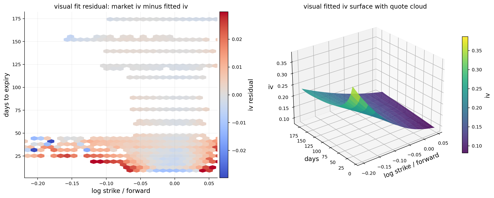
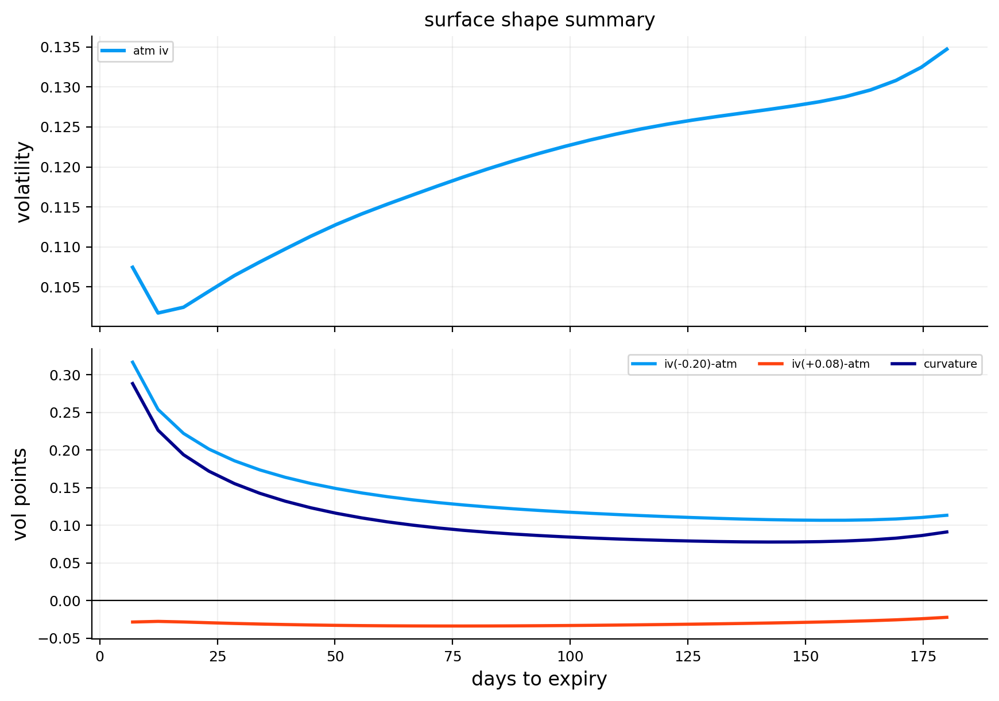
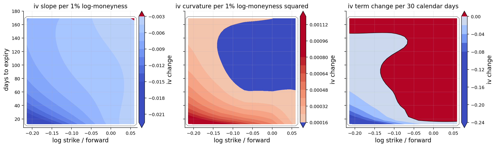
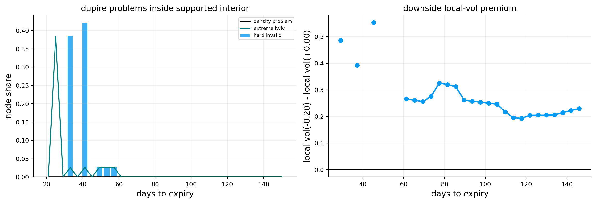
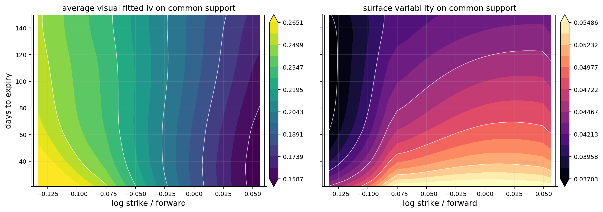
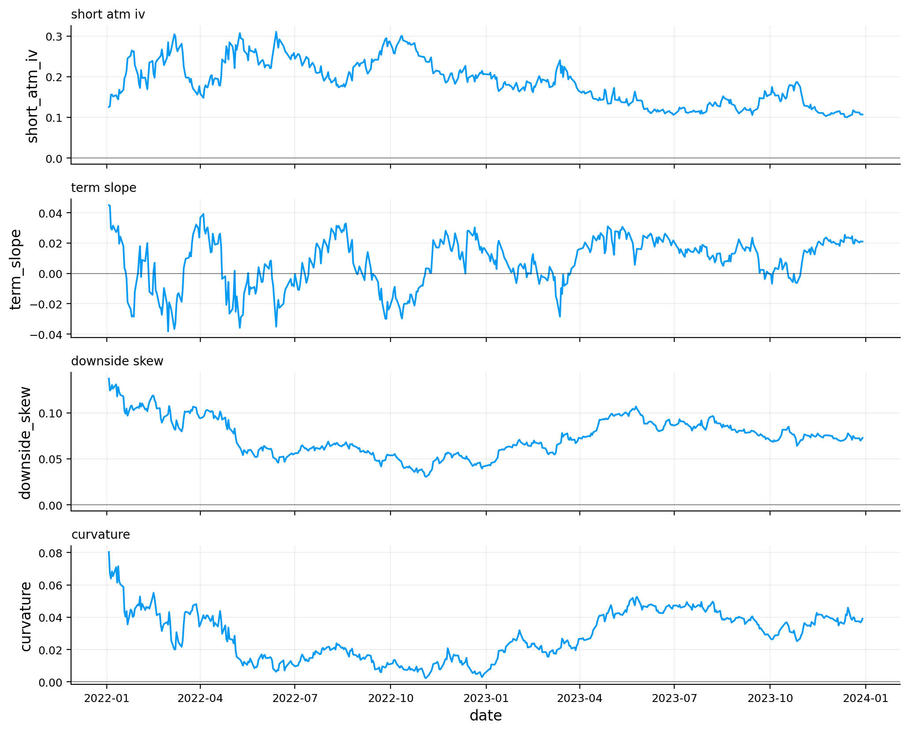
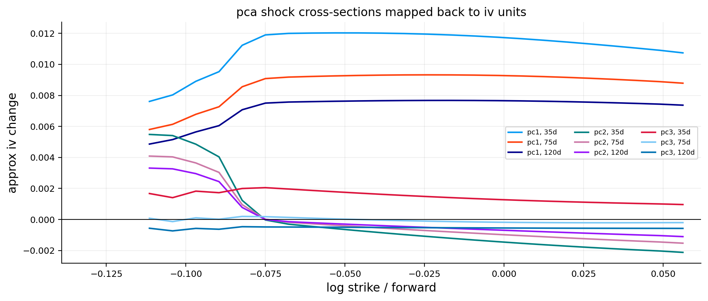
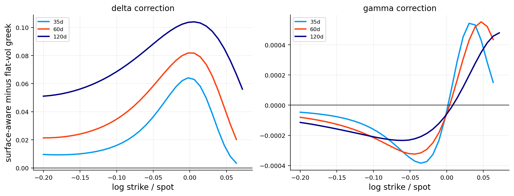

import warnings
import time
from pathlib import Path
import numpy as np
import pandas as pd
import matplotlib.pyplot as plt
from cycler import cycler
from matplotlib.colors import TwoSlopeNorm as two_slope_norm
from scipy.interpolate import PchipInterpolator as pchip_interpolator
from scipy.interpolate import BSpline as bspline
from scipy.linalg import LinAlgError as linear_error
from scipy.linalg import lstsq as linear_lstsq
from scipy.linalg import solve as linear_solve
from scipy.stats import norm
from sklearn.decomposition import PCA as pca_estimator
from sklearn.preprocessing import StandardScaler as standard_scaler
import jax
import jax.numpy as jnp
from IPython.display import display
from quantfinlab.dataio import load_par_yield_curve, load_spx_option_pairs
from quantfinlab.fixed_income.bootstrap import build_zero_curve_panel_from_par_yields
from quantfinlab.fixed_income.discounting import discount_factor_from_rate, map_curve_rates_to_dates_and_taus
from quantfinlab.options.bsm import black76_price
from quantfinlab.options.greeks import compute_greeks_jax
from quantfinlab.options.iv import compute_iv_table
from quantfinlab.options.parity import infer_forwards_from_paired_quotes
from quantfinlab.plotting import LAB_COLORS as lab_colors, set_plot_style
from quantfinlab.plotting.options import plot_forward_vs_spot
jax.config.update("jax_enable_x64", True)
warnings.filterwarnings("ignore")
pd.set_option("display.float_format", lambda x: f"{x:,.6f}")
pd.set_option("display.max_columns", 120)
set_plot_style(lab_colors)
plt.rcParams["axes.prop_cycle"] = cycler(color=lab_colors)
plt.rcParams.update({"figure.figsize": (7.4, 4.2), "figure.dpi": 180, "savefig.dpi": 300})
seed = 7
rng = np.random.default_rng(seed)8. Volatility Surface and Local Volatility model
root = Path.cwd()
if root.name.lower() == "notebooks":
root = root.parent
data_dir = root / "data"
spx_chain_path = data_dir / "spx_options_chain_202201_202312.parquet"
rates_path = data_dir / "par-yield-curve-rates-1990-2026.csv"
ann_days = 365.25
k_fit_grid = np.linspace(-0.38, 0.38, 65)
tau_fit_grid = np.linspace(7.0 / ann_days, 180.0 / ann_days, 33)
k_raw_grid = np.linspace(-0.38, 0.38, 61)
tau_raw_grid = np.linspace(7.0 / ann_days, 180.0 / ann_days, 17)
k_safe_grid = np.linspace(-0.25, 0.10, 49)
tau_safe_grid = np.linspace(21.0 / ann_days, 150.0 / ann_days, 25)
k_lv_grid = np.linspace(-0.25, 0.10, 49)
tau_lv_grid = np.linspace(21.0 / ann_days, 150.0 / ann_days, 33)
k_risk_grid = np.linspace(-0.20, 0.08, 35)
tau_risk_grid = np.array([21.0, 35.0, 60.0, 90.0, 120.0, 150.0]) / ann_days
shape_k_down = -0.20
shape_k_down_hist = -0.125
shape_k_atm = 0.00
shape_k_up = 0.08q_pair = load_spx_option_pairs(
spx_chain_path,
annualization_days=ann_days,
max_rel_spread=0.60,
tau_min_days=7.0,
tau_max_days=180.0,
k_over_s_range=(0.62, 1.62),
top_n_per_expiry=90,
min_pairs_per_expiry=5,
)
q_pair["dte_days"] = q_pair["tau"] * ann_days
q_pair["moneyness"] = q_pair["strike"] / q_pair["spot"]
display(q_pair[["date", "expiry", "spot", "strike", "dte_days", "c_mid", "p_mid", "c_rel_spread", "p_rel_spread"]].head(8))| date | expiry | spot | strike | dte_days | c_mid | p_mid | c_rel_spread | p_rel_spread | |
|---|---|---|---|---|---|---|---|---|---|
| 0 | 2022-01-03 | 2022-01-12 | 4,795.570000 | 4,535.000000 | 8.333333 | 258.900000 | 1.925000 | 0.023175 | 0.077922 |
| 1 | 2022-01-03 | 2022-01-12 | 4,795.570000 | 4,540.000000 | 8.333333 | 256.000000 | 1.975000 | 0.024219 | 0.075949 |
| 2 | 2022-01-03 | 2022-01-12 | 4,795.570000 | 4,545.000000 | 8.333333 | 251.100000 | 2.025000 | 0.024691 | 0.074074 |
| 3 | 2022-01-03 | 2022-01-12 | 4,795.570000 | 4,550.000000 | 8.333333 | 246.100000 | 2.100000 | 0.025193 | 0.047619 |
| 4 | 2022-01-03 | 2022-01-12 | 4,795.570000 | 4,555.000000 | 8.333333 | 239.100000 | 2.175000 | 0.076955 | 0.068966 |
| 5 | 2022-01-03 | 2022-01-12 | 4,795.570000 | 4,560.000000 | 8.333333 | 236.300000 | 2.225000 | 0.026238 | 0.067416 |
| 6 | 2022-01-03 | 2022-01-12 | 4,795.570000 | 4,565.000000 | 8.333333 | 228.200000 | 2.325000 | 0.070990 | 0.064516 |
| 7 | 2022-01-03 | 2022-01-12 | 4,795.570000 | 4,570.000000 | 8.333333 | 226.450000 | 2.400000 | 0.026938 | 0.041667 |
def curve_on_tau(q, value_col, tau_values, fallback=np.nan):
tau_values = np.asarray(tau_values, dtype=float)
out = np.full(tau_values.shape, float(fallback), dtype=float)
if q is None or len(q) == 0 or value_col not in q.columns or "tau" not in q.columns:
return out
z = q[["tau", value_col]].copy()
z["tau"] = pd.to_numeric(z["tau"], errors="coerce")
z[value_col] = pd.to_numeric(z[value_col], errors="coerce")
z = z[np.isfinite(z["tau"]) & np.isfinite(z[value_col]) & (z["tau"] > 0)].copy()
if z.empty:
return out
g = z.groupby("tau", as_index=False)[value_col].median().sort_values("tau")
x = g["tau"].to_numpy(dtype=float)
y = g[value_col].to_numpy(dtype=float)
if len(x) == 1:
return np.full(tau_values.shape, float(y[0]), dtype=float)
return np.interp(tau_values, x, y, left=y[0], right=y[-1])
def rate_on_tau(q, tau_values):
r = curve_on_tau(q, "rate", tau_values, fallback=np.nan)
if np.isfinite(r).any():
fill = float(np.nanmedian(r[np.isfinite(r)]))
return np.where(np.isfinite(r), r, fill)
return np.zeros_like(np.asarray(tau_values, dtype=float))
def carry_on_tau(q, tau_values, spot_value):
tau_values = np.asarray(tau_values, dtype=float)
b = curve_on_tau(q, "implied_carry", tau_values, fallback=np.nan)
if np.isfinite(b).any():
fill = float(np.nanmedian(b[np.isfinite(b)]))
return np.where(np.isfinite(b), b, fill)
if q is not None and len(q) and "forward" in q.columns:
z = q[["tau", "forward"]].copy()
z["tau"] = pd.to_numeric(z["tau"], errors="coerce")
z["forward"] = pd.to_numeric(z["forward"], errors="coerce")
z = z[np.isfinite(z["tau"]) & np.isfinite(z["forward"]) & (z["tau"] > 0) & (z["forward"] > 0)].copy()
if not z.empty and np.isfinite(spot_value) and spot_value > 0:
z["carry"] = np.log(z["forward"] / float(spot_value)) / z["tau"]
b = curve_on_tau(z.rename(columns={"carry": "implied_carry"}), "implied_carry", tau_values, fallback=np.nan)
if np.isfinite(b).any():
fill = float(np.nanmedian(b[np.isfinite(b)]))
return np.where(np.isfinite(b), b, fill)
return np.zeros_like(tau_values)
def quote_support(q, k_q=(0.01, 0.99)):
z = q[np.isfinite(q["k"]) & np.isfinite(q["tau"])].copy()
if z.empty:
return {"k_lo": np.nan, "k_hi": np.nan, "tau_lo": np.nan, "tau_hi": np.nan}
return {
"k_lo": float(z["k"].quantile(k_q[0])),
"k_hi": float(z["k"].quantile(k_q[1])),
"tau_lo": float(z["tau"].min()),
"tau_hi": float(z["tau"].max()),
}
def support_mask_from_limits(limits, k_values, tau_values):
k_arr, tau_arr = np.broadcast_arrays(np.asarray(k_values, dtype=float), np.asarray(tau_values, dtype=float))
return (
np.isfinite(k_arr)
& np.isfinite(tau_arr)
& (k_arr >= limits["k_lo"])
& (k_arr <= limits["k_hi"])
& (tau_arr >= limits["tau_lo"])
& (tau_arr <= limits["tau_hi"])
)
def support_mask_for_grid(q, k_values, tau_values):
limits = quote_support(q)
kk, tt = np.meshgrid(np.asarray(k_values, dtype=float), np.asarray(tau_values, dtype=float))
return support_mask_from_limits(limits, kk, tt)
def masked_grid(arr, mask):
out = np.asarray(arr, dtype=float).copy()
out[~mask] = np.nan
return out
def robust_abs_limit(arr, mask=None, q=0.98, floor=1e-10):
x = np.asarray(arr, dtype=float)
if mask is not None:
x = x[np.asarray(mask, dtype=bool)]
x = np.abs(x[np.isfinite(x)])
if len(x) == 0:
return float(floor)
lim = float(np.nanquantile(x, q))
return lim if np.isfinite(lim) and lim > floor else float(floor)
def xlim_from_mask(x_values, mask=None, pad=0.03):
x = np.asarray(x_values, dtype=float)
if mask is not None:
m = np.asarray(mask, dtype=bool)
if m.ndim > 1:
m = m.any(axis=0)
x = x[m]
x = x[np.isfinite(x)]
if len(x) == 0:
return None
lo = float(np.nanmin(x))
hi = float(np.nanmax(x))
span = max(hi - lo, 1e-6)
return lo - pad * span, hi + pad * span
def set_supported_xlim(ax, x_values, mask=None, pad=0.03):
lim = xlim_from_mask(x_values, mask=mask, pad=pad)
if lim is not None:
ax.set_xlim(*lim)par_yields = load_par_yield_curve(rates_path, source="us_treasury")
rate_curve = build_zero_curve_panel_from_par_yields(par_yields, method="pchip", as_continuous=True)
q_pair["rate"], q_pair["rate_source_date"] = map_curve_rates_to_dates_and_taus(
rate_curve,
dates=q_pair["date"],
taus=q_pair["tau"],
method="previous",
interpolation="linear",
return_source_dates=True,
)
q_pair["discount_factor"] = discount_factor_from_rate(q_pair["rate"], q_pair["tau"])
carry_curve = infer_forwards_from_paired_quotes(q_pair).rename(columns={"n_pairs": "fwd_pairs"})
carry_curve["fwd_ok"] = (
np.isfinite(carry_curve["forward"])
& (carry_curve["forward"] > 0)
& (carry_curve["fwd_pairs"] >= 5)
)
use_cols = ["date", "expiry", "forward", "implied_carry", "fwd_pairs", "parity_error_iqr", "fwd_ok"]
q_pair = q_pair.merge(carry_curve[use_cols], on=["date", "expiry"], how="inner")
q_pair = q_pair[
q_pair["fwd_ok"].fillna(False)
& (q_pair["forward"] > 0)
& (q_pair["discount_factor"] > 0)
].copy()
q_pair["k_pair"] = np.log(q_pair["strike"] / q_pair["forward"])
display(carry_curve[["date", "expiry", "tau", "spot", "rate", "forward", "implied_carry", "fwd_pairs", "parity_error_iqr"]].head(8))| date | expiry | tau | spot | rate | forward | implied_carry | fwd_pairs | parity_error_iqr | |
|---|---|---|---|---|---|---|---|---|---|
| 0 | 2022-01-03 | 2022-01-12 | 0.022815 | 4,795.570000 | 0.000500 | 4,794.051044 | -0.013885 | 90 | 0.489915 |
| 1 | 2022-01-03 | 2022-01-14 | 0.028291 | 4,795.570000 | 0.000500 | 4,793.923676 | -0.012137 | 90 | 0.448981 |
| 2 | 2022-01-03 | 2022-01-18 | 0.039243 | 4,795.570000 | 0.000500 | 4,793.952334 | -0.008597 | 90 | 0.801119 |
| 3 | 2022-01-03 | 2022-01-19 | 0.041980 | 4,795.570000 | 0.000500 | 4,793.933175 | -0.008132 | 90 | 0.635388 |
| 4 | 2022-01-03 | 2022-01-21 | 0.047456 | 4,795.570000 | 0.000500 | 4,794.047901 | -0.006689 | 90 | 0.398230 |
| 5 | 2022-01-03 | 2022-01-24 | 0.055670 | 4,795.570000 | 0.000500 | 4,793.848785 | -0.006448 | 90 | 0.678255 |
| 6 | 2022-01-03 | 2022-01-26 | 0.061145 | 4,795.570000 | 0.000500 | 4,793.852258 | -0.005859 | 90 | 0.751628 |
| 7 | 2022-01-03 | 2022-01-28 | 0.066621 | 4,795.570000 | 0.000500 | 4,793.599287 | -0.006170 | 90 | 0.583023 |
fig, axes = plt.subplots(1, 2, figsize=(12.5, 4.2))
plot_forward_vs_spot(carry_curve[carry_curve["fwd_ok"].fillna(False)], ax=axes[0], title="parity-implied forward levels")
last_rate_date = q_pair["date"].max()
q_rate = q_pair[q_pair["date"].eq(last_rate_date)].copy()
tau_line = np.linspace(7.0 / ann_days, 180.0 / ann_days, 60)
r_line = rate_on_tau(q_rate, tau_line)
b_line = carry_on_tau(q_rate, tau_line, float(q_rate["spot"].median()))
axes[1].plot(tau_line * ann_days, r_line, lw=2.0, label="treasury r(t)")
axes[1].plot(tau_line * ann_days, b_line, lw=2.0, label="parity carry b(t)")
axes[1].plot(tau_line * ann_days, r_line - b_line, lw=2.0, label="q(t)=r(t)-b(t)")
axes[1].axhline(0.0, color="black", lw=0.8, alpha=0.55)
axes[1].set_title(f"rate, carry, and dividend-yield curves ({pd.Timestamp(last_rate_date).date()})")
axes[1].set_xlabel("days to expiry")
axes[1].set_ylabel("continuous annual rate")
axes[1].legend(loc="best")
plt.tight_layout()
plt.show()
base_cols = [
"date", "timestamp", "expiry", "underlying", "spot", "strike", "tau", "dte_days",
"rate", "rate_source_date", "discount_factor", "forward", "implied_carry",
"fwd_pairs", "parity_error_iqr", "k_pair",
]
q_call = q_pair[base_cols + ["c_bid", "c_ask", "c_mid", "c_spread", "c_rel_spread", "c_volume"]].copy()
q_call = q_call.rename(columns={
"c_bid": "bid", "c_ask": "ask", "c_mid": "mid", "c_spread": "spread",
"c_rel_spread": "rel_spread", "c_volume": "volume",
})
q_call["option_type"] = "call"
q_put = q_pair[base_cols + ["p_bid", "p_ask", "p_mid", "p_spread", "p_rel_spread", "p_volume"]].copy()
q_put = q_put.rename(columns={
"p_bid": "bid", "p_ask": "ask", "p_mid": "mid", "p_spread": "spread",
"p_rel_spread": "rel_spread", "p_volume": "volume",
})
q_put["option_type"] = "put"
q_mkt = pd.concat([q_call, q_put], ignore_index=True)
q_mkt = q_mkt.sort_values(["date", "expiry", "strike", "option_type"]).reset_index(drop=True)
display(q_mkt[["date", "expiry", "option_type", "spot", "forward", "strike", "dte_days", "rate", "implied_carry", "mid", "bid", "ask"]].head(10))
display(pd.DataFrame([{
"rows": len(q_mkt),
"dates": q_mkt["date"].nunique(),
"expiries": q_mkt["expiry"].nunique(),
"calls": q_mkt["option_type"].eq("call").sum(),
"puts": q_mkt["option_type"].eq("put").sum(),
"min_dte": q_mkt["dte_days"].min(),
"max_dte": q_mkt["dte_days"].max(),
}]))| date | expiry | option_type | spot | forward | strike | dte_days | rate | implied_carry | mid | bid | ask | |
|---|---|---|---|---|---|---|---|---|---|---|---|---|
| 0 | 2022-01-03 | 2022-01-12 | call | 4,795.570000 | 4,794.051044 | 4,535.000000 | 8.333333 | 0.000500 | -0.013885 | 258.900000 | 255.900000 | 261.900000 |
| 1 | 2022-01-03 | 2022-01-12 | put | 4,795.570000 | 4,794.051044 | 4,535.000000 | 8.333333 | 0.000500 | -0.013885 | 1.925000 | 1.850000 | 2.000000 |
| 2 | 2022-01-03 | 2022-01-12 | call | 4,795.570000 | 4,794.051044 | 4,540.000000 | 8.333333 | 0.000500 | -0.013885 | 256.000000 | 252.900000 | 259.100000 |
| 3 | 2022-01-03 | 2022-01-12 | put | 4,795.570000 | 4,794.051044 | 4,540.000000 | 8.333333 | 0.000500 | -0.013885 | 1.975000 | 1.900000 | 2.050000 |
| 4 | 2022-01-03 | 2022-01-12 | call | 4,795.570000 | 4,794.051044 | 4,545.000000 | 8.333333 | 0.000500 | -0.013885 | 251.100000 | 248.000000 | 254.200000 |
| 5 | 2022-01-03 | 2022-01-12 | put | 4,795.570000 | 4,794.051044 | 4,545.000000 | 8.333333 | 0.000500 | -0.013885 | 2.025000 | 1.950000 | 2.100000 |
| 6 | 2022-01-03 | 2022-01-12 | call | 4,795.570000 | 4,794.051044 | 4,550.000000 | 8.333333 | 0.000500 | -0.013885 | 246.100000 | 243.000000 | 249.200000 |
| 7 | 2022-01-03 | 2022-01-12 | put | 4,795.570000 | 4,794.051044 | 4,550.000000 | 8.333333 | 0.000500 | -0.013885 | 2.100000 | 2.050000 | 2.150000 |
| 8 | 2022-01-03 | 2022-01-12 | call | 4,795.570000 | 4,794.051044 | 4,555.000000 | 8.333333 | 0.000500 | -0.013885 | 239.100000 | 229.900000 | 248.300000 |
| 9 | 2022-01-03 | 2022-01-12 | put | 4,795.570000 | 4,794.051044 | 4,555.000000 | 8.333333 | 0.000500 | -0.013885 | 2.175000 | 2.100000 | 2.250000 |
| rows | dates | expiries | calls | puts | min_dte | max_dte | |
|---|---|---|---|---|---|---|---|
| 0 | 2407888 | 505 | 502 | 1203944 | 1203944 | 7.333333 | 179.333333 |
tic = time.perf_counter()
iv_quotes = compute_iv_table(q_mkt, price_cols=("bid", "mid", "ask"), solver="lbr_lite", engine="auto")
iv_quotes["date"] = pd.to_datetime(iv_quotes["date"], errors="coerce").dt.normalize()
iv_quotes["expiry"] = pd.to_datetime(iv_quotes["expiry"], errors="coerce").dt.normalize()
iv_quotes["dte_days"] = iv_quotes["tau"] * ann_days
iv_quotes["k"] = np.log(iv_quotes["strike"] / iv_quotes["forward"])
iv_quotes["log_moneyness"] = iv_quotes["k"]
iv_quotes["iv_ok"] = iv_quotes.get("iv_mid_success", pd.Series(False, index=iv_quotes.index)).astype(bool)
print(f"lbr-lite iv rows: {len(iv_quotes):,}; engine={iv_quotes.attrs.get('engine_used', 'unknown')}; seconds={time.perf_counter() - tic:,.1f}")
display(iv_quotes[["date", "expiry", "option_type", "spot", "forward", "strike", "dte_days", "mid", "rate", "discount_factor", "implied_carry", "k", "iv_mid", "iv_bid", "iv_ask", "iv_ok"]].head(10))lbr-lite iv rows: 2,407,888; engine=numba; seconds=24.4| date | expiry | option_type | spot | forward | strike | dte_days | mid | rate | discount_factor | implied_carry | k | iv_mid | iv_bid | iv_ask | iv_ok | |
|---|---|---|---|---|---|---|---|---|---|---|---|---|---|---|---|---|
| 0 | 2022-01-03 | 2022-01-12 | call | 4,795.570000 | 4,794.051044 | 4,535.000000 | 8.333333 | 258.900000 | 0.000500 | 0.999989 | -0.013885 | -0.055551 | NaN | NaN | 0.217322 | False |
| 1 | 2022-01-03 | 2022-01-12 | put | 4,795.570000 | 4,794.051044 | 4,535.000000 | 8.333333 | 1.925000 | 0.000500 | 0.999989 | -0.013885 | -0.055551 | 0.201951 | 0.200533 | 0.203337 | True |
| 2 | 2022-01-03 | 2022-01-12 | call | 4,795.570000 | 4,794.051044 | 4,540.000000 | 8.333333 | 256.000000 | 0.000500 | 0.999989 | -0.013885 | -0.054449 | 0.199128 | NaN | 0.241292 | True |
| 3 | 2022-01-03 | 2022-01-12 | put | 4,795.570000 | 4,794.051044 | 4,540.000000 | 8.333333 | 1.975000 | 0.000500 | 0.999989 | -0.013885 | -0.054449 | 0.199551 | 0.198171 | 0.200900 | True |
| 4 | 2022-01-03 | 2022-01-12 | call | 4,795.570000 | 4,794.051044 | 4,545.000000 | 8.333333 | 251.100000 | 0.000500 | 0.999989 | -0.013885 | -0.053348 | 0.197583 | NaN | 0.238556 | True |
| 5 | 2022-01-03 | 2022-01-12 | put | 4,795.570000 | 4,794.051044 | 4,545.000000 | 8.333333 | 2.025000 | 0.000500 | 0.999989 | -0.013885 | -0.053348 | 0.197111 | 0.195768 | 0.198424 | True |
| 6 | 2022-01-03 | 2022-01-12 | call | 4,795.570000 | 4,794.051044 | 4,550.000000 | 8.333333 | 246.100000 | 0.000500 | 0.999989 | -0.013885 | -0.052249 | 0.194229 | NaN | 0.234733 | True |
| 7 | 2022-01-03 | 2022-01-12 | put | 4,795.570000 | 4,794.051044 | 4,550.000000 | 8.333333 | 2.100000 | 0.000500 | 0.999989 | -0.013885 | -0.052249 | 0.195061 | 0.194199 | 0.195911 | True |
| 8 | 2022-01-03 | 2022-01-12 | call | 4,795.570000 | 4,794.051044 | 4,555.000000 | 8.333333 | 239.100000 | 0.000500 | 0.999989 | -0.013885 | -0.051150 | 0.118354 | NaN | 0.267619 | True |
| 9 | 2022-01-03 | 2022-01-12 | put | 4,795.570000 | 4,794.051044 | 4,555.000000 | 8.333333 | 2.175000 | 0.000500 | 0.999989 | -0.013885 | -0.051150 | 0.192947 | 0.191692 | 0.194178 | True |
iv_summary = pd.DataFrame([{
"rows": int(len(iv_quotes)),
"number_of_dates": int(iv_quotes["date"].nunique()),
"number_of_expiries": int(iv_quotes["expiry"].nunique()),
"min_tau": float(np.nanmin(iv_quotes["tau"])),
"max_tau": float(np.nanmax(iv_quotes["tau"])),
"min_iv": float(np.nanmin(iv_quotes["iv_mid"])),
"max_iv": float(np.nanmax(iv_quotes["iv_mid"])),
"number_of_calls": int(iv_quotes["option_type"].eq("call").sum()),
"number_of_puts": int(iv_quotes["option_type"].eq("put").sum()),
"missing_iv_count": int(iv_quotes["iv_mid"].isna().sum()),
"missing_mid_count": int(iv_quotes["mid"].isna().sum()),
}])
display(iv_summary)
z = iv_quotes[np.isfinite(iv_quotes["iv_mid"]) & np.isfinite(iv_quotes["k"])].copy()
z = z[z["k"].between(-0.45, 0.45) & z["dte_days"].between(7.0, 180.0)]
fig, axes = plt.subplots(1, 2, figsize=(13.0, 4.6), sharey=True)
h0 = axes[0].hexbin(z["k"], z["dte_days"], gridsize=(54, 30), mincnt=1, cmap="magma")
axes[0].set_title("quote count by log-moneyness and expiry")
axes[0].set_xlabel("log strike / forward")
axes[0].set_ylabel("days to expiry")
fig.colorbar(h0, ax=axes[0], pad=0.01, label="quotes")
h1 = axes[1].hexbin(z["k"], z["dte_days"], C=z["iv_mid"], gridsize=(54, 30), mincnt=1, reduce_C_function=np.nanmedian, cmap="viridis")
axes[1].set_title("median lbr-lite implied vol")
axes[1].set_xlabel("log strike / forward")
fig.colorbar(h1, ax=axes[1], pad=0.01, label="median iv")
plt.tight_layout()
plt.show()| rows | number_of_dates | number_of_expiries | min_tau | max_tau | min_iv | max_iv | number_of_calls | number_of_puts | missing_iv_count | missing_mid_count | |
|---|---|---|---|---|---|---|---|---|---|---|---|
| 0 | 2407888 | 505 | 502 | 0.020078 | 0.490988 | 0.045725 | 1.006858 | 1203944 | 1203944 | 6460 | 0 |

surface = iv_quotes.copy()
surface["relative_spread"] = pd.to_numeric(surface.get("rel_spread"), errors="coerce")
if surface["relative_spread"].notna().sum() == 0 and {"bid", "ask", "mid"}.issubset(surface.columns):
surface["relative_spread"] = (surface["ask"] - surface["bid"]) / surface["mid"].replace(0, np.nan)
good = (
surface["iv_ok"].fillna(False)
& np.isfinite(surface["iv_mid"]) & surface["iv_mid"].between(0.03, 3.0)
& np.isfinite(surface["tau"]) & surface["tau"].between(7.0 / ann_days, 180.0 / ann_days)
& np.isfinite(surface["strike"]) & (surface["strike"] > 0)
& np.isfinite(surface["forward"]) & (surface["forward"] > 0)
& np.isfinite(surface["spot"]) & (surface["spot"] > 0)
& np.isfinite(surface["rate"])
& np.isfinite(surface["discount_factor"]) & (surface["discount_factor"] > 0)
& np.isfinite(surface["implied_carry"])
& np.isfinite(surface["k"]) & surface["k"].between(-0.40, 0.40)
)
if {"bid", "ask"}.issubset(surface.columns):
good &= surface["ask"].ge(surface["bid"])
surface = surface.loc[good].copy()
if surface["relative_spread"].notna().sum() > 0:
cap = float(np.nanquantile(surface["relative_spread"], 0.997))
cap = max(0.75, cap) if np.isfinite(cap) else 1.0
surface = surface[(surface["relative_spread"].isna()) | surface["relative_spread"].between(0.0, cap)].copy()
sqrt_tau = np.sqrt(surface["tau"].clip(lower=1e-8))
d1 = (-surface["k"] + 0.5 * surface["iv_mid"] ** 2 * surface["tau"]) / (surface["iv_mid"].clip(lower=1e-8) * sqrt_tau)
dollar_vega = surface["discount_factor"] * surface["forward"] * norm.pdf(d1) * sqrt_tau
if {"ask", "bid"}.issubset(surface.columns):
price_spread = (surface["ask"] - surface["bid"]).clip(lower=0.0)
else:
price_spread = pd.Series(np.nan, index=surface.index, dtype=float)
iv_ask = pd.to_numeric(surface["iv_ask"], errors="coerce") if "iv_ask" in surface.columns else pd.Series(np.nan, index=surface.index, dtype=float)
iv_bid = pd.to_numeric(surface["iv_bid"], errors="coerce") if "iv_bid" in surface.columns else pd.Series(np.nan, index=surface.index, dtype=float)
iv_width = (iv_ask - iv_bid).where(lambda x: np.isfinite(x) & (x > 0))
iv_width_from_price = price_spread / dollar_vega.replace(0, np.nan)
surface["iv_uncertainty"] = iv_width.combine_first(iv_width_from_price)
fallback_unc = float(np.nanmedian(surface["iv_uncertainty"])) if surface["iv_uncertainty"].notna().any() else 0.025
surface["iv_uncertainty"] = surface["iv_uncertainty"].fillna(fallback_unc).clip(lower=0.0030, upper=0.50)
spread = surface["relative_spread"].copy()
spread_med = float(np.nanmedian(spread[(spread > 0) & np.isfinite(spread)])) if spread.notna().any() else 0.08
spread = spread.fillna(spread_med).clip(lower=0.003, upper=1.0)
spread_weight = 1.0 / (spread.to_numpy(dtype=float) ** 2 + 0.02 ** 2)
spread_weight = spread_weight / max(float(np.nanmedian(spread_weight[np.isfinite(spread_weight)])), 1e-12)
info = np.asarray(dollar_vega, dtype=float)
info_med = float(np.nanmedian(info[np.isfinite(info) & (info > 0)])) if np.isfinite(info).any() else 1.0
info_weight = np.clip((info / max(info_med, 1e-12)) ** 0.45, 0.20, 3.00)
wing_weight = np.exp(-np.maximum(np.abs(surface["k"].to_numpy(dtype=float)) - 0.10, 0.0) / 0.45)
unc = surface["iv_uncertainty"].to_numpy(dtype=float)
unc_med = float(np.nanmedian(unc[np.isfinite(unc) & (unc > 0)])) if np.isfinite(unc).any() else 0.025
unc_penalty = np.clip(unc / max(unc_med, 1e-12), 0.50, 3.50) ** -0.35
raw_weight = spread_weight * info_weight * wing_weight * unc_penalty
raw_weight = raw_weight / max(float(np.nanmedian(raw_weight[np.isfinite(raw_weight)])), 1e-12)
surface["obs_weight"] = np.clip(raw_weight, 0.05, 20.0)
surface["total_var"] = (surface["iv_mid"] ** 2) * surface["tau"]
by_date = surface.groupby("date").agg(
quotes=("iv_mid", "size"),
expiries=("expiry", "nunique"),
median_iv=("iv_mid", "median"),
near_atm_quotes=("k", lambda x: int((np.abs(x) <= 0.03).sum())),
k_min=("k", "min"),
k_max=("k", "max"),
k_q01=("k", lambda x: float(np.nanquantile(x, 0.01))),
k_q99=("k", lambda x: float(np.nanquantile(x, 0.99))),
tau_min_days=("dte_days", "min"),
tau_max_days=("dte_days", "max"),
).sort_index()
support_by_date = surface.groupby("date").apply(lambda x: pd.Series(quote_support(x)), include_groups=False)
weight_check = pd.DataFrame({
"relative_spread": surface["relative_spread"],
"iv_uncertainty": surface["iv_uncertainty"],
"dollar_vega": dollar_vega,
"obs_weight": surface["obs_weight"],
}).describe(percentiles=[0.05, 0.25, 0.50, 0.75, 0.95]).T
display(surface[["date", "expiry", "option_type", "strike", "forward", "k", "dte_days", "mid", "iv_mid", "iv_uncertainty", "obs_weight"]].head(10))
display(by_date.tail(10))
display(weight_check[["mean", "std", "5%", "25%", "50%", "75%", "95%"]])| date | expiry | option_type | strike | forward | k | dte_days | mid | iv_mid | iv_uncertainty | obs_weight | |
|---|---|---|---|---|---|---|---|---|---|---|---|
| 1 | 2022-01-03 | 2022-01-12 | put | 4,535.000000 | 4,794.051044 | -0.055551 | 8.333333 | 1.925000 | 0.201951 | 0.003000 | 0.050000 |
| 2 | 2022-01-03 | 2022-01-12 | call | 4,540.000000 | 4,794.051044 | -0.054449 | 8.333333 | 256.000000 | 0.199128 | 0.113538 | 0.188892 |
| 3 | 2022-01-03 | 2022-01-12 | put | 4,540.000000 | 4,794.051044 | -0.054449 | 8.333333 | 1.975000 | 0.199551 | 0.003000 | 0.050000 |
| 4 | 2022-01-03 | 2022-01-12 | call | 4,545.000000 | 4,794.051044 | -0.053348 | 8.333333 | 251.100000 | 0.197583 | 0.108930 | 0.188041 |
| 5 | 2022-01-03 | 2022-01-12 | put | 4,545.000000 | 4,794.051044 | -0.053348 | 8.333333 | 2.025000 | 0.197111 | 0.003000 | 0.050000 |
| 6 | 2022-01-03 | 2022-01-12 | call | 4,550.000000 | 4,794.051044 | -0.052249 | 8.333333 | 246.100000 | 0.194229 | 0.107594 | 0.184515 |
| 7 | 2022-01-03 | 2022-01-12 | put | 4,550.000000 | 4,794.051044 | -0.052249 | 8.333333 | 2.100000 | 0.195061 | 0.003000 | 0.111631 |
| 8 | 2022-01-03 | 2022-01-12 | call | 4,555.000000 | 4,794.051044 | -0.051150 | 8.333333 | 239.100000 | 0.118354 | 0.500000 | 0.050000 |
| 9 | 2022-01-03 | 2022-01-12 | put | 4,555.000000 | 4,794.051044 | -0.051150 | 8.333333 | 2.175000 | 0.192947 | 0.003000 | 0.058610 |
| 10 | 2022-01-03 | 2022-01-12 | call | 4,560.000000 | 4,794.051044 | -0.050053 | 8.333333 | 236.300000 | 0.190798 | 0.099444 | 0.181734 |
| quotes | expiries | median_iv | near_atm_quotes | k_min | k_max | k_q01 | k_q99 | tau_min_days | tau_max_days | |
|---|---|---|---|---|---|---|---|---|---|---|
| date | ||||||||||
| 2023-12-15 | 5602 | 33 | 0.117793 | 2830 | -0.396095 | 0.131614 | -0.247191 | 0.064509 | 10.333333 | 167.333333 |
| 2023-12-18 | 5714 | 34 | 0.122031 | 2804 | -0.399781 | 0.159118 | -0.251990 | 0.068842 | 7.333333 | 164.333333 |
| 2023-12-19 | 5699 | 34 | 0.122465 | 2878 | -0.345387 | 0.154511 | -0.218614 | 0.065679 | 7.333333 | 163.333333 |
| 2023-12-20 | 5692 | 34 | 0.127076 | 3222 | -0.391662 | 0.133876 | -0.243560 | 0.062371 | 7.333333 | 162.333333 |
| 2023-12-21 | 5694 | 34 | 0.127824 | 3054 | -0.399806 | 0.124833 | -0.227472 | 0.068553 | 7.333333 | 161.333333 |
| 2023-12-22 | 5611 | 33 | 0.125541 | 2982 | -0.342236 | 0.122907 | -0.229069 | 0.066547 | 10.333333 | 160.333333 |
| 2023-12-26 | 5714 | 34 | 0.126025 | 3002 | -0.346455 | 0.152627 | -0.220124 | 0.061898 | 7.333333 | 177.333333 |
| 2023-12-27 | 5578 | 33 | 0.119718 | 2977 | -0.347443 | 0.116209 | -0.207835 | 0.059050 | 7.333333 | 176.333333 |
| 2023-12-28 | 5585 | 33 | 0.119631 | 2998 | -0.347791 | 0.116361 | -0.210033 | 0.061260 | 7.333333 | 175.333333 |
| 2023-12-29 | 5554 | 33 | 0.117871 | 3058 | -0.344795 | 0.117917 | -0.219155 | 0.062296 | 9.333333 | 174.333333 |
| mean | std | 5% | 25% | 50% | 75% | 95% | |
|---|---|---|---|---|---|---|---|
| relative_spread | 0.024149 | 0.032842 | 0.004937 | 0.008547 | 0.014790 | 0.027907 | 0.068966 |
| iv_uncertainty | 0.013299 | 0.038611 | 0.003000 | 0.003000 | 0.003000 | 0.008753 | 0.047721 |
| dollar_vega | 468.968141 | 295.245620 | 69.775627 | 243.963865 | 394.847417 | 693.288082 | 1,020.166622 |
| obs_weight | 1.066575 | 0.758849 | 0.073044 | 0.345511 | 1.000000 | 1.699956 | 2.340480 |
valid_dates = by_date[(by_date["quotes"] >= 160) & (by_date["expiries"] >= 5) & (by_date["near_atm_quotes"] >= 20)].copy()
if valid_dates.empty:
valid_dates = by_date[(by_date["quotes"] >= 90) & (by_date["expiries"] >= 4)].copy()
main_date = pd.Timestamp(valid_dates.index.max()).normalize()
near = surface[np.abs(surface["k"]) <= 0.03].groupby("date")["iv_mid"].median().rename("near_atm_iv")
date_state = valid_dates.join(near, how="left")
high_iv_date = pd.Timestamp(date_state["near_atm_iv"].idxmax()).normalize()
low_iv_date = pd.Timestamp(date_state["near_atm_iv"].idxmin()).normalize()
chosen_rows = []
for role, date in [("main_date", main_date), ("high_iv_date", high_iv_date), ("low_iv_date", low_iv_date)]:
row = date_state.loc[date]
chosen_rows.append({
"role": role,
"date": date.date(),
"number_of_quotes": int(row["quotes"]),
"number_of_expiries": int(row["expiries"]),
"median_iv": float(row["median_iv"]),
"near_atm_median_iv": float(row["near_atm_iv"]),
"k_range": f"{row['k_min']:.3f} to {row['k_max']:.3f}",
"tau_range_days": f"{row['tau_min_days']:.1f} to {row['tau_max_days']:.1f}",
})
chosen_dates = pd.DataFrame(chosen_rows)
q_main = surface[surface["date"].eq(main_date)].copy()
display(chosen_dates)| role | date | number_of_quotes | number_of_expiries | median_iv | near_atm_median_iv | k_range | tau_range_days | |
|---|---|---|---|---|---|---|---|---|
| 0 | main_date | 2023-12-29 | 5554 | 33 | 0.117871 | 0.108171 | -0.345 to 0.118 | 9.3 to 174.3 |
| 1 | high_iv_date | 2022-06-13 | 4418 | 25 | 0.302909 | 0.310232 | -0.292 to 0.160 | 7.3 to 169.3 |
| 2 | low_iv_date | 2023-12-14 | 5622 | 33 | 0.116827 | 0.103932 | -0.396 to 0.128 | 7.3 to 168.3 |
def weighted_by_k(q):
g = q[["k", "iv_mid", "obs_weight"]].copy()
g = g[np.isfinite(g["k"]) & np.isfinite(g["iv_mid"]) & np.isfinite(g["obs_weight"])].copy()
if g.empty:
return pd.DataFrame(columns=["k", "iv_mid"])
g["k_round"] = g["k"].round(6)
out = (
g.groupby("k_round")
.apply(lambda x: np.average(x["iv_mid"], weights=x["obs_weight"]), include_groups=False)
.rename("iv_mid")
.reset_index()
.rename(columns={"k_round": "k"})
)
return out.sort_values("k")
def raw_pchip_grid(q, k_values, tau_values, min_k=6):
rows = []
used = []
for expiry, grp in q.groupby("expiry"):
x = weighted_by_k(grp)
tau = float(grp["tau"].median())
if len(x) < min_k or not np.isfinite(tau):
continue
xx = x["k"].to_numpy(dtype=float)
yy = x["iv_mid"].to_numpy(dtype=float)
ok = np.isfinite(xx) & np.isfinite(yy)
xx, yy = xx[ok], yy[ok]
if len(np.unique(xx)) < min_k:
continue
order = np.argsort(xx)
xx, yy = xx[order], yy[order]
fn = pchip_interpolator(xx, yy, extrapolate=False)
row = fn(k_values)
support = (k_values >= xx.min()) & (k_values <= xx.max())
row[~support] = np.nan
rows.append(row)
used.append({"expiry": expiry, "tau": tau, "dte_days": tau * ann_days, "k_min": xx.min(), "k_max": xx.max(), "n": len(xx)})
if not rows:
return np.full((len(tau_values), len(k_values)), np.nan), pd.DataFrame()
used = pd.DataFrame(used).sort_values("tau").reset_index(drop=True)
slice_mat = np.asarray(rows, dtype=float)[used.index]
obs_tau = used["tau"].to_numpy(dtype=float)
out = np.full((len(tau_values), len(k_values)), np.nan)
for j in range(len(k_values)):
y = slice_mat[:, j]
ok = np.isfinite(y)
if ok.sum() >= 3:
fn_tau = pchip_interpolator(obs_tau[ok], y[ok], extrapolate=False)
vals = fn_tau(tau_values)
vals[(tau_values < obs_tau[ok].min()) | (tau_values > obs_tau[ok].max())] = np.nan
out[:, j] = vals
elif ok.sum() == 2:
vals = np.interp(tau_values, obs_tau[ok], y[ok], left=np.nan, right=np.nan)
vals[(tau_values < obs_tau[ok].min()) | (tau_values > obs_tau[ok].max())] = np.nan
out[:, j] = vals
return out, used
raw_iv_grid, raw_slices = raw_pchip_grid(q_main, k_raw_grid, tau_raw_grid)
display(raw_slices.head())| expiry | tau | dte_days | k_min | k_max | n | |
|---|---|---|---|---|---|---|
| 0 | 2024-01-08 | 0.025553 | 9.333333 | -0.064375 | 0.033367 | 90 |
| 1 | 2024-01-09 | 0.028291 | 10.333333 | -0.064423 | 0.045392 | 90 |
| 2 | 2024-01-10 | 0.031029 | 11.333333 | -0.062363 | 0.055172 | 90 |
| 3 | 2024-01-11 | 0.033767 | 12.333333 | -0.066332 | 0.049587 | 90 |
| 4 | 2024-01-12 | 0.036505 | 13.333333 | -0.054234 | 0.050464 | 90 |
target_days = np.array([14, 30, 60, 90, 150], dtype=float)
slice_ids = [int(np.argmin(np.abs(raw_slices["dte_days"] - d))) for d in target_days if len(raw_slices)]
slice_ids = list(dict.fromkeys(slice_ids))[:5]
fig, ax = plt.subplots(figsize=(8.8, 4.9))
smile_x = []
for n, idx in enumerate(slice_ids):
tau = float(raw_slices.loc[idx, "tau"])
expiry = raw_slices.loc[idx, "expiry"]
grp = q_main[q_main["expiry"].eq(expiry)].copy()
pts = weighted_by_k(grp)
ax.scatter(pts["k"], pts["iv_mid"], s=14, alpha=0.42, color=lab_colors[n % len(lab_colors)])
fn = pchip_interpolator(pts["k"], pts["iv_mid"], extrapolate=False)
y = fn(k_raw_grid)
y[(k_raw_grid < pts["k"].min()) | (k_raw_grid > pts["k"].max())] = np.nan
ax.plot(k_raw_grid, y, lw=2.0, color=lab_colors[n % len(lab_colors)], label=f"{tau * ann_days:.0f}d")
smile_x.extend([float(pts["k"].min()), float(pts["k"].max())])
ax.set_title("market smiles with same broad call and put quote set")
ax.set_xlabel("log strike / forward")
ax.set_ylabel("implied vol")
if smile_x:
lo, hi = np.nanmin(smile_x), np.nanmax(smile_x)
ax.set_xlim(lo - 0.02 * (hi - lo), hi + 0.02 * (hi - lo))
ax.legend(title="maturity")
plt.tight_layout()
plt.show()
k_mesh_raw, tau_mesh_raw = np.meshgrid(k_raw_grid, tau_raw_grid * ann_days)
raw_k_mask = np.isfinite(raw_iv_grid).any(axis=0)
fig = plt.figure(figsize=(13.0, 5.3))
ax0 = fig.add_subplot(1, 2, 1)
levels = np.linspace(np.nanpercentile(raw_iv_grid, 3), np.nanpercentile(raw_iv_grid, 97), 16)
cf = ax0.contourf(k_raw_grid, tau_raw_grid * ann_days, raw_iv_grid, levels=levels, cmap="viridis", extend="both")
cs = ax0.contour(k_raw_grid, tau_raw_grid * ann_days, raw_iv_grid, levels=levels[::2], colors="white", linewidths=0.6, alpha=0.75)
ax0.clabel(cs, fmt="%.2f", fontsize=7)
ax0.set_title("raw pchip iv benchmark")
ax0.set_xlabel("log strike / forward")
ax0.set_ylabel("days to expiry")
set_supported_xlim(ax0, k_raw_grid, raw_k_mask)
fig.colorbar(cf, ax=ax0, pad=0.01, label="iv")
ax1 = fig.add_subplot(1, 2, 2, projection="3d")
plot_raw = np.ma.masked_invalid(raw_iv_grid)
surf3 = ax1.plot_surface(k_mesh_raw, tau_mesh_raw, plot_raw, cmap="viridis", linewidth=0, antialiased=True, alpha=0.92)
ax1.contour(k_mesh_raw, tau_mesh_raw, plot_raw, zdir="z", offset=np.nanmin(raw_iv_grid) * 0.96, cmap="viridis", linewidths=0.7)
ax1.set_title("raw pchip surface")
ax1.set_xlabel("log strike / forward")
ax1.set_ylabel("days")
ax1.set_zlabel("iv")
lim = xlim_from_mask(k_raw_grid, raw_k_mask)
if lim is not None:
ax1.set_xlim(*lim)
ax1.view_init(elev=27, azim=-132)
fig.colorbar(surf3, ax=ax1, shrink=0.70, pad=0.06, label="iv")
plt.tight_layout()
plt.show()
def make_knots(n_basis, degree=3):
n_inner = int(n_basis) - int(degree) - 1
inner = np.linspace(-1.0, 1.0, n_inner + 2)[1:-1] if n_inner > 0 else np.array([])
return np.r_[np.repeat(-1.0, degree + 1), inner, np.repeat(1.0, degree + 1)]
def basis_matrix(x, knots, degree=3, der=0):
x = np.asarray(x, dtype=float).reshape(-1)
x = np.clip(x, knots[0] + 1e-10, knots[-1] - 1e-10)
n_basis = len(knots) - degree - 1
mat = np.zeros((len(x), n_basis), dtype=float)
for i in range(n_basis):
coef = np.zeros(n_basis, dtype=float)
coef[i] = 1.0
spl = bspline(knots, coef, degree, extrapolate=False)
if der:
spl = spl.derivative(der)
mat[:, i] = spl(x)
return np.nan_to_num(mat, nan=0.0, posinf=0.0, neginf=0.0)
def second_diff(n):
eye = np.eye(int(n), dtype=float)
return np.diff(eye, n=2, axis=0)
def fit_total_var(q, *, n_k=14, n_tau=9, lambda_k=40.0, lambda_tau=70.0, label="fit"):
z = q[np.isfinite(q["k"]) & np.isfinite(q["tau"]) & np.isfinite(q["iv_mid"]) & np.isfinite(q["obs_weight"])].copy()
z = z[(z["tau"] > 0) & (z["iv_mid"] > 0)].copy()
if len(z) < 80 or z["expiry"].nunique() < 4:
raise ValueError("not enough observations for spline fit")
k_lo, k_hi = -0.40, 0.40
t_lo, t_hi = 7.0 / ann_days, 180.0 / ann_days
k_center, k_scale = 0.5 * (k_lo + k_hi), 0.5 * (k_hi - k_lo)
t_center, t_scale = 0.5 * (t_lo + t_hi), 0.5 * (t_hi - t_lo)
k_scaled = (z["k"].to_numpy(dtype=float) - k_center) / k_scale
t_scaled = (z["tau"].to_numpy(dtype=float) - t_center) / t_scale
knots_k = make_knots(n_k)
knots_tau = make_knots(n_tau)
bk = basis_matrix(k_scaled, knots_k)
bt = basis_matrix(t_scaled, knots_tau)
design = (bk[:, :, None] * bt[:, None, :]).reshape(len(z), n_k * n_tau)
w_total = np.clip((z["iv_mid"].to_numpy(dtype=float) ** 2) * z["tau"].to_numpy(dtype=float), 1e-8, None)
y = np.log(w_total)
wt = z["obs_weight"].to_numpy(dtype=float)
wt = wt / max(np.nanmedian(wt[np.isfinite(wt)]), 1e-12)
wt = np.clip(wt, 0.05, 50.0)
dk = second_diff(n_k)
dt = second_diff(n_tau)
pen_k = np.kron(dk.T @ dk, np.eye(n_tau))
pen_t = np.kron(np.eye(n_k), dt.T @ dt)
normal_mat = design.T @ (design * wt[:, None]) + float(lambda_k) * pen_k + float(lambda_tau) * pen_t + 1e-8 * np.eye(n_k * n_tau)
rhs = design.T @ (wt * y)
try:
coef = linear_solve(normal_mat, rhs, assume_a="pos")
except (linear_error, ValueError):
coef = linear_lstsq(normal_mat, rhs)[0]
fit = {
"label": label,
"coef": coef.reshape(n_k, n_tau),
"knots_k": knots_k,
"knots_tau": knots_tau,
"degree": 3,
"k_center": k_center,
"k_scale": k_scale,
"tau_center": t_center,
"tau_scale": t_scale,
"lambda_k": float(lambda_k),
"lambda_tau": float(lambda_tau),
"n_obs": int(len(z)),
"n_expiry": int(z["expiry"].nunique()),
}
return fit
def logw_points(fit, k_values, tau_values, der_k=0, der_tau=0):
k_values, tau_values = np.broadcast_arrays(np.asarray(k_values, dtype=float), np.asarray(tau_values, dtype=float))
flat_k = k_values.reshape(-1)
flat_t = tau_values.reshape(-1)
sk = (flat_k - fit["k_center"]) / fit["k_scale"]
st = (flat_t - fit["tau_center"]) / fit["tau_scale"]
bk = basis_matrix(sk, fit["knots_k"], fit["degree"], der=der_k) / (fit["k_scale"] ** der_k)
bt = basis_matrix(st, fit["knots_tau"], fit["degree"], der=der_tau) / (fit["tau_scale"] ** der_tau)
vals = np.einsum("ij,jl,il->i", bk, fit["coef"], bt)
return vals.reshape(k_values.shape)
def logw_grid(fit, k_values, tau_values, der_k=0, der_tau=0):
kk, tt = np.meshgrid(np.asarray(k_values, dtype=float), np.asarray(tau_values, dtype=float))
return logw_points(fit, kk, tt, der_k=der_k, der_tau=der_tau)
def iv_points(fit, k_values, tau_values):
tau_values = np.asarray(tau_values, dtype=float)
log_w = logw_points(fit, k_values, tau_values)
return np.sqrt(np.exp(np.clip(log_w, -40.0, 5.0)) / np.clip(tau_values, 1e-8, None))
def iv_grid(fit, k_values, tau_values):
log_w = logw_grid(fit, k_values, tau_values)
return np.sqrt(np.exp(np.clip(log_w, -40.0, 5.0)) / np.clip(np.asarray(tau_values)[:, None], 1e-8, None))
def fit_metrics(fit, q, label=None):
fitted = iv_points(fit, q["k"].to_numpy(dtype=float), q["tau"].to_numpy(dtype=float))
resid = q["iv_mid"].to_numpy(dtype=float) - fitted
wt = q["obs_weight"].to_numpy(dtype=float)
ok = np.isfinite(resid) & np.isfinite(wt) & (wt > 0)
return pd.Series({
"fit": label or fit["label"],
"date": pd.Timestamp(q["date"].iloc[0]).date() if len(q) else pd.NaT,
"quote_count": int(ok.sum()),
"number_of_maturities": int(q["expiry"].nunique()),
"rmse": float(np.sqrt(np.nanmean(resid[ok] ** 2))),
"weighted_rmse": float(np.sqrt(np.nansum(wt[ok] * resid[ok] ** 2) / np.nansum(wt[ok]))),
"mae": float(np.nanmean(np.abs(resid[ok]))),
"median_absolute_error": float(np.nanmedian(np.abs(resid[ok]))),
"p95_absolute_error": float(np.nanquantile(np.abs(resid[ok]), 0.95)),
"mean_residual": float(np.nanmean(resid[ok])),
"residual_std": float(np.nanstd(resid[ok])),
"k_min": float(np.nanmin(q["k"])),
"k_max": float(np.nanmax(q["k"])),
"min_dte": float(np.nanmin(q["dte_days"])),
"max_dte": float(np.nanmax(q["dte_days"])),
})def basis_for_autodiff(x, knots, degree=3):
x = jnp.clip(x, knots[0] + 1e-10, knots[-1] - 1e-10)
b = jnp.where((x >= knots[:-1]) & (x < knots[1:]), 1.0, 0.0)
for order in range(1, int(degree) + 1):
n = knots.shape[0] - order - 1
left_den = knots[order:n + order] - knots[:n]
right_den = knots[order + 1:n + order + 1] - knots[1:n + 1]
left_den_safe = jnp.where(left_den > 0, left_den, 1.0)
right_den_safe = jnp.where(right_den > 0, right_den, 1.0)
left = jnp.where(left_den > 0, (x - knots[:n]) / left_den_safe, 0.0) * b[:n]
right = jnp.where(right_den > 0, (knots[order + 1:n + order + 1] - x) / right_den_safe, 0.0) * b[1:n + 1]
b = left + right
return b
def iv_from_fit_for_autodiff(fit, k_value, tau_value):
coef = jnp.asarray(fit["coef"])
knots_k = jnp.asarray(fit["knots_k"])
knots_tau = jnp.asarray(fit["knots_tau"])
degree = int(fit.get("degree", 3))
sk = (k_value - jnp.asarray(fit["k_center"])) / jnp.asarray(fit["k_scale"])
st = (tau_value - jnp.asarray(fit["tau_center"])) / jnp.asarray(fit["tau_scale"])
bk = basis_for_autodiff(sk, knots_k, degree)
bt = basis_for_autodiff(st, knots_tau, degree)
log_w = bk @ coef @ bt
return jnp.sqrt(jnp.exp(jnp.clip(log_w, -40.0, 5.0)) / jnp.maximum(tau_value, 1e-8))
def iv_from_arrays_for_autodiff(coef, knots_k, knots_tau, k_center, k_scale, tau_center, tau_scale, k_value, tau_value):
sk = (k_value - k_center) / k_scale
st = (tau_value - tau_center) / tau_scale
bk = basis_for_autodiff(sk, knots_k, 3)
bt = basis_for_autodiff(st, knots_tau, 3)
log_w = bk @ coef @ bt
return jnp.sqrt(jnp.exp(jnp.clip(log_w, -40.0, 5.0)) / jnp.maximum(tau_value, 1e-8))
@jax.jit
def dupire_grid_for_autodiff(coef, knots_k, knots_tau, k_center, k_scale, tau_center, tau_scale, tau_values, strike_values, rate_values, carry_values, spot_value):
def rate_value(tau_value):
return jnp.interp(tau_value, tau_values, rate_values)
def carry_value(tau_value):
return jnp.interp(tau_value, tau_values, carry_values)
def iv_value(k_value, tau_value):
return iv_from_arrays_for_autodiff(coef, knots_k, knots_tau, k_center, k_scale, tau_center, tau_scale, k_value, tau_value)
def call_price_scalar(strike_value, tau_value):
tau_value = jnp.maximum(tau_value, 1e-8)
r_value = rate_value(tau_value)
b_value = carry_value(tau_value)
forward_value = spot_value * jnp.exp(b_value * tau_value)
k_model = jnp.log(strike_value / jnp.maximum(forward_value, 1e-300))
sigma_value = jnp.maximum(iv_value(k_model, tau_value), 1e-6)
sqrt_tau = jnp.sqrt(tau_value)
d1 = (jnp.log(jnp.maximum(forward_value, 1e-300) / jnp.maximum(strike_value, 1e-300)) + 0.5 * sigma_value ** 2 * tau_value) / (sigma_value * sqrt_tau)
d2 = d1 - sigma_value * sqrt_tau
cdf1 = 0.5 * (1.0 + jax.lax.erf(d1 / jnp.sqrt(2.0)))
cdf2 = 0.5 * (1.0 + jax.lax.erf(d2 / jnp.sqrt(2.0)))
return jnp.exp(-r_value * tau_value) * (forward_value * cdf1 - strike_value * cdf2)
price_tau_scalar = jax.grad(call_price_scalar, argnums=1)
price_strike_scalar = jax.grad(call_price_scalar, argnums=0)
price_strike_strike_scalar = jax.grad(price_strike_scalar, argnums=0)
tau_mesh, strike_mesh = jnp.meshgrid(tau_values, strike_values, indexing="ij")
def node(strike_value, tau_value):
r_value = rate_value(tau_value)
b_value = carry_value(tau_value)
q_value = r_value - b_value
forward_value = spot_value * jnp.exp(b_value * tau_value)
k_model = jnp.log(strike_value / jnp.maximum(forward_value, 1e-300))
iv_node = iv_value(k_model, tau_value)
price_value = call_price_scalar(strike_value, tau_value)
c_tau_value = price_tau_scalar(strike_value, tau_value)
c_strike_value = price_strike_scalar(strike_value, tau_value)
c_strike_strike_value = price_strike_strike_scalar(strike_value, tau_value)
numerator_value = c_tau_value + q_value * price_value + (r_value - q_value) * strike_value * c_strike_value
denominator_value = 0.5 * strike_value ** 2 * c_strike_strike_value
return price_value, iv_node, k_model, numerator_value / denominator_value, numerator_value, denominator_value
vals = jax.vmap(node)(strike_mesh.reshape(-1), tau_mesh.reshape(-1))
return [v.reshape(tau_mesh.shape) for v in vals]
def dupire_from_fit(fit, q, tau_values, k_values, lv_cap=2.50, ratio_cap=3.00):
tau_values = np.asarray(tau_values, dtype=float)
k_values = np.asarray(k_values, dtype=float)
spot_value = float(np.nanmedian(pd.to_numeric(q["spot"], errors="coerce")))
strike_grid = spot_value * np.exp(k_values)
rate_tau = rate_on_tau(q, tau_values)
carry_tau = carry_on_tau(q, tau_values, spot_value)
q_tau = rate_tau - carry_tau
forward_tau = spot_value * np.exp(carry_tau * tau_values)
price_out, iv_out, model_k, local_var, numerator, denominator = dupire_grid_for_autodiff(
jnp.asarray(fit["coef"]),
jnp.asarray(fit["knots_k"]),
jnp.asarray(fit["knots_tau"]),
jnp.asarray(fit["k_center"]),
jnp.asarray(fit["k_scale"]),
jnp.asarray(fit["tau_center"]),
jnp.asarray(fit["tau_scale"]),
jnp.asarray(tau_values),
jnp.asarray(strike_grid),
jnp.asarray(rate_tau),
jnp.asarray(carry_tau),
jnp.asarray(spot_value),
)
price_out.block_until_ready()
price_out = np.asarray(price_out, dtype=float)
iv_out = np.asarray(iv_out, dtype=float)
model_k = np.asarray(model_k, dtype=float)
local_var = np.asarray(local_var, dtype=float)
numerator = np.asarray(numerator, dtype=float)
denominator = np.asarray(denominator, dtype=float)
local_vol_raw = np.sqrt(np.where(local_var > 0, local_var, np.nan))
ratio_raw = local_vol_raw / iv_out
boundary = np.zeros_like(local_var, dtype=bool)
boundary[[0, -1], :] = True
boundary[:, [0, -1]] = True
support_mask = support_mask_from_limits(quote_support(q), model_k, tau_values[:, None])
denom_floor = 1e-10
nonfinite_var = ~np.isfinite(local_var)
negative_var = np.isfinite(local_var) & (local_var <= 0)
negative_density = np.isfinite(denominator) & (denominator <= denom_floor)
near_zero_denominator = ~np.isfinite(denominator) | (np.abs(denominator) <= denom_floor)
hard_invalid = nonfinite_var | negative_var | negative_density | near_zero_denominator
hard_other = hard_invalid & ~negative_density
valid_for_ratio = support_mask & (~boundary) & (~hard_invalid) & np.isfinite(ratio_raw) & np.isfinite(local_vol_raw)
extreme_ratio = valid_for_ratio & ((ratio_raw > ratio_cap) | (ratio_raw < 1.0 / ratio_cap) | (local_vol_raw > lv_cap))
invalid_mask = boundary | (~support_mask) | hard_invalid | extreme_ratio
return {
"engine_used": "jax",
"fallback_used": False,
"k_grid": k_values,
"tau_grid": tau_values,
"strike_grid": strike_grid,
"model_k_grid": model_k,
"iv_grid": np.where(support_mask, iv_out, np.nan),
"price_grid": np.where(support_mask, price_out, np.nan),
"local_var": local_var,
"local_vol": np.where(invalid_mask, np.nan, local_vol_raw),
"local_vol_raw": local_vol_raw,
"local_vol_to_iv": np.where(invalid_mask, np.nan, ratio_raw),
"local_vol_to_iv_raw": ratio_raw,
"numerator": numerator,
"denominator": denominator,
"support_mask": support_mask,
"boundary_mask": boundary,
"hard_invalid_mask": hard_invalid,
"hard_other_mask": hard_other,
"negative_var_mask": negative_var,
"negative_density_mask": negative_density,
"near_zero_denominator_mask": near_zero_denominator,
"extreme_ratio_mask": extreme_ratio,
"invalid_mask": invalid_mask,
"rate_tau": rate_tau,
"carry_tau": carry_tau,
"q_tau": q_tau,
"forward_tau": forward_tau,
"spot": spot_value,
}
def row_at_k(arr, k_values, k_value):
idx = int(np.argmin(np.abs(np.asarray(k_values) - float(k_value))))
return arr[:, idx]
def dupire_metrics(lv, downside_k=shape_k_down_hist):
region = lv["support_mask"] & (~lv["boundary_mask"])
if not region.any():
region = np.isfinite(lv["iv_grid"])
hard_invalid_share = float(np.nanmean(lv["hard_invalid_mask"][region]))
hard_other_share = float(np.nanmean(lv["hard_other_mask"][region]))
neg_var_share = float(np.nanmean(lv["negative_var_mask"][region]))
neg_density_share = float(np.nanmean(lv["negative_density_mask"][region]))
extreme_share = float(np.nanmean(lv["extreme_ratio_mask"][region]))
total_flagged_share = float(np.nanmean((lv["hard_invalid_mask"] | lv["extreme_ratio_mask"])[region]))
ratio = lv["local_vol_to_iv_raw"]
valid_ratio = ratio[region & (~lv["hard_invalid_mask"]) & (~lv["extreme_ratio_mask"]) & np.isfinite(ratio)]
def supported_slice(target):
vals = []
k_values = np.asarray(lv["k_grid"], dtype=float)
arr = lv["local_vol"]
ok_grid = region & (~lv["hard_invalid_mask"]) & (~lv["extreme_ratio_mask"]) & np.isfinite(arr)
for i in range(arr.shape[0]):
ok = ok_grid[i]
if ok.any():
idx = np.where(ok)[0]
vals.append(float(arr[i, idx[np.argmin(np.abs(k_values[idx] - target))]]))
else:
vals.append(np.nan)
return np.asarray(vals, dtype=float)
atm_lv = supported_slice(shape_k_atm)
down_lv = supported_slice(downside_k)
up_lv = supported_slice(shape_k_up)
med_abs = float(np.nanmedian(np.abs(valid_ratio - 1.0))) if len(valid_ratio) else np.nan
stress = 1.00 * hard_other_share + 0.75 * extreme_share + 0.50 * med_abs + 0.25 * neg_density_share
return {
"engine_used": lv.get("engine_used", "jax"),
"fallback_used": bool(lv.get("fallback_used", False)),
"dupire_hard_invalid_share": hard_invalid_share,
"dupire_hard_invalid_other_share": hard_other_share,
"dupire_negative_var_share": neg_var_share,
"dupire_negative_density_share": neg_density_share,
"dupire_extreme_ratio_share": extreme_share,
"dupire_total_flagged_share": total_flagged_share,
"dupire_median_lv_to_iv": float(np.nanmedian(valid_ratio)) if len(valid_ratio) else np.nan,
"dupire_median_abs_lv_to_iv_minus_1": med_abs,
"dupire_atm_local_vol_level": float(np.nanmedian(atm_lv)),
"dupire_downside_local_vol_premium": float(np.nanmedian(down_lv - atm_lv)),
"dupire_upside_local_vol_premium": float(np.nanmedian(up_lv - atm_lv)),
"dupire_stress": float(stress),
}
fit_visual = fit_total_var(q_main, n_k=15, n_tau=9, lambda_k=28.0, lambda_tau=55.0, label="visual")
dupire_candidates = []
for lambda_k_try, lambda_tau_try in [(90.0, 130.0), (180.0, 260.0), (360.0, 520.0), (700.0, 900.0)]:
try:
f_try = fit_total_var(q_main, n_k=15, n_tau=9, lambda_k=lambda_k_try, lambda_tau=lambda_tau_try, label="dupire")
lv_try = dupire_from_fit(f_try, q_main, tau_lv_grid, k_lv_grid)
m_try = dupire_metrics(lv_try, downside_k=shape_k_down)
e_try = fit_metrics(f_try, q_main, "dupire")
score = (
e_try["weighted_rmse"]
+ 0.20 * m_try["dupire_hard_invalid_other_share"]
+ 0.10 * m_try["dupire_negative_density_share"]
+ 0.08 * m_try["dupire_median_abs_lv_to_iv_minus_1"]
)
dupire_candidates.append({
"lambda_k": lambda_k_try,
"lambda_tau": lambda_tau_try,
"weighted_rmse": float(e_try["weighted_rmse"]),
"hard_invalid_share": m_try["dupire_hard_invalid_share"],
"hard_invalid_other_share": m_try["dupire_hard_invalid_other_share"],
"negative_density_share": m_try["dupire_negative_density_share"],
"extreme_ratio_share": m_try["dupire_extreme_ratio_share"],
"total_flagged_share": m_try["dupire_total_flagged_share"],
"median_abs_lv_to_iv_minus_1": m_try["dupire_median_abs_lv_to_iv_minus_1"],
"selection_score": float(score),
"fit": f_try,
})
except Exception as exc:
dupire_candidates.append({"lambda_k": lambda_k_try, "lambda_tau": lambda_tau_try, "selection_score": np.inf, "error": str(exc)[:120]})
candidate_table = pd.DataFrame([{k: v for k, v in row.items() if k != "fit"} for row in dupire_candidates]).sort_values("selection_score")
best = min([row for row in dupire_candidates if "fit" in row], key=lambda row: row["selection_score"])
fit_dupire = best["fit"]
dupire_lambda_k = float(best["lambda_k"])
dupire_lambda_tau = float(best["lambda_tau"])
main_support_mask = support_mask_for_grid(q_main, k_fit_grid, tau_fit_grid)
iv_visual_grid = masked_grid(iv_grid(fit_visual, k_fit_grid, tau_fit_grid), main_support_mask)
iv_dupire_grid = masked_grid(iv_grid(fit_dupire, k_fit_grid, tau_fit_grid), main_support_mask)
fit_table = pd.DataFrame([fit_metrics(fit_visual, q_main, "visual"), fit_metrics(fit_dupire, q_main, "dupire")])
grid_check = pd.DataFrame([{
"fit": "visual",
"finite_supported_grid_share": float(np.isfinite(iv_visual_grid[main_support_mask]).mean()),
"min_supported_grid_iv": float(np.nanmin(iv_visual_grid)),
"max_supported_grid_iv": float(np.nanmax(iv_visual_grid)),
}, {
"fit": "dupire",
"finite_supported_grid_share": float(np.isfinite(iv_dupire_grid[main_support_mask]).mean()),
"min_supported_grid_iv": float(np.nanmin(iv_dupire_grid)),
"max_supported_grid_iv": float(np.nanmax(iv_dupire_grid)),
}])
check_k = rng.uniform(max(-0.20, q_main["k"].quantile(0.03)), min(0.08, q_main["k"].quantile(0.97)), 24)
check_tau = rng.uniform(max(21 / ann_days, q_main["tau"].quantile(0.03)), min(150 / ann_days, q_main["tau"].quantile(0.97)), 24)
iv_numpy_check = iv_points(fit_dupire, check_k, check_tau)
iv_auto_check = np.asarray(jax.vmap(lambda k_value, tau_value: iv_from_fit_for_autodiff(fit_dupire, k_value, tau_value))(jnp.asarray(check_k), jnp.asarray(check_tau)), dtype=float)
spline_eval_check = pd.DataFrame([{"surface_eval_max_abs_diff": float(np.nanmax(np.abs(iv_numpy_check - iv_auto_check)))}])
display(candidate_table)
display(fit_table)
display(grid_check)
display(spline_eval_check)| lambda_k | lambda_tau | weighted_rmse | hard_invalid_share | hard_invalid_other_share | negative_density_share | extreme_ratio_share | total_flagged_share | median_abs_lv_to_iv_minus_1 | selection_score | |
|---|---|---|---|---|---|---|---|---|---|---|
| 0 | 90.000000 | 130.000000 | 0.005491 | 0.028452 | 0.028452 | 0.000000 | 0.016736 | 0.045188 | 0.231118 | 0.029671 |
| 1 | 180.000000 | 260.000000 | 0.006030 | 0.032636 | 0.032636 | 0.000000 | 0.015063 | 0.047699 | 0.242881 | 0.031987 |
| 2 | 360.000000 | 520.000000 | 0.007168 | 0.037657 | 0.037657 | 0.000000 | 0.016736 | 0.054393 | 0.270835 | 0.036366 |
| 3 | 700.000000 | 900.000000 | 0.008729 | 0.041841 | 0.041841 | 0.000000 | 0.015063 | 0.056904 | 0.302894 | 0.041329 |
| fit | date | quote_count | number_of_maturities | rmse | weighted_rmse | mae | median_absolute_error | p95_absolute_error | mean_residual | residual_std | k_min | k_max | min_dte | max_dte | |
|---|---|---|---|---|---|---|---|---|---|---|---|---|---|---|---|
| 0 | visual | 2023-12-29 | 5554 | 33 | 0.010989 | 0.005030 | 0.004965 | 0.002258 | 0.018665 | 0.001035 | 0.010941 | -0.344795 | 0.117917 | 9.333333 | 174.333333 |
| 1 | dupire | 2023-12-29 | 5554 | 33 | 0.011624 | 0.005491 | 0.005490 | 0.002750 | 0.018626 | 0.000829 | 0.011594 | -0.344795 | 0.117917 | 9.333333 | 174.333333 |
| fit | finite_supported_grid_share | min_supported_grid_iv | max_supported_grid_iv | |
|---|---|---|---|---|
| 0 | visual | 1.000000 | 0.079507 | 0.386654 |
| 1 | dupire | 1.000000 | 0.078502 | 0.378564 |
| surface_eval_max_abs_diff | |
|---|---|
| 0 | 0.000000 |
fig, ax = plt.subplots(figsize=(8.9, 5.0))
limits_main = quote_support(q_main)
for n, day in enumerate([14, 30, 60, 90, 150]):
i_raw = int(np.nanargmin(np.abs(tau_raw_grid * ann_days - day)))
tau = tau_raw_grid[i_raw]
raw_y = raw_iv_grid[i_raw].copy()
smooth_y = iv_points(fit_visual, k_raw_grid, np.full_like(k_raw_grid, tau))
support_line = support_mask_from_limits(limits_main, k_raw_grid, np.full_like(k_raw_grid, tau))
raw_y[~support_line] = np.nan
smooth_y[~support_line] = np.nan
ax.plot(k_raw_grid, raw_y, ls="--", lw=1.3, color=lab_colors[n % len(lab_colors)], alpha=0.72)
ax.plot(k_raw_grid, smooth_y, lw=2.1, color=lab_colors[n % len(lab_colors)], label=f"{tau * ann_days:.0f}d")
ax.set_xlim(max(k_raw_grid.min(), limits_main["k_lo"]), min(k_raw_grid.max(), limits_main["k_hi"]))
ax.set_title("pchip benchmark vs visual log-total-variance spline")
ax.set_xlabel("log strike / forward")
ax.set_ylabel("implied vol")
ax.legend(title="maturity")
plt.tight_layout()
plt.show()
q_fit = q_main.copy()
q_fit["fit_iv_visual"] = iv_points(fit_visual, q_fit["k"].to_numpy(dtype=float), q_fit["tau"].to_numpy(dtype=float))
q_fit["fit_iv_dupire"] = iv_points(fit_dupire, q_fit["k"].to_numpy(dtype=float), q_fit["tau"].to_numpy(dtype=float))
q_fit["residual_visual"] = q_fit["iv_mid"] - q_fit["fit_iv_visual"]
q_fit["residual_dupire"] = q_fit["iv_mid"] - q_fit["fit_iv_dupire"]
res_lim = robust_abs_limit(q_fit["residual_visual"], q=0.98, floor=0.005)
fig = plt.figure(figsize=(13.5, 5.4))
ax0 = fig.add_subplot(1, 2, 1)
res_hex = ax0.hexbin(q_fit["k"], q_fit["dte_days"], C=q_fit["residual_visual"], gridsize=(48, 26), reduce_C_function=np.nanmedian, mincnt=1, cmap="coolwarm", vmin=-res_lim, vmax=res_lim)
ax0.set_xlim(limits_main["k_lo"], limits_main["k_hi"])
ax0.set_title("visual fit residual: market iv minus fitted iv")
ax0.set_xlabel("log strike / forward")
ax0.set_ylabel("days to expiry")
fig.colorbar(res_hex, ax=ax0, pad=0.01, label="iv residual")
ax1 = fig.add_subplot(1, 2, 2, projection="3d")
k_mesh, tau_mesh = np.meshgrid(k_fit_grid, tau_fit_grid * ann_days)
surf3 = ax1.plot_surface(k_mesh, tau_mesh, np.ma.masked_invalid(iv_visual_grid), cmap="viridis", linewidth=0, antialiased=True, alpha=0.88)
q3 = q_fit.sample(min(len(q_fit), 1800), random_state=seed)
ax1.set_xlim(limits_main["k_lo"], limits_main["k_hi"])
ax1.set_title("visual fitted iv surface with quote cloud")
ax1.set_xlabel("log strike / forward")
ax1.set_ylabel("days")
ax1.set_zlabel("iv")
ax1.view_init(elev=26, azim=-128)
fig.colorbar(surf3, ax=ax1, shrink=0.7, pad=0.06, label="iv")
plt.tight_layout()
plt.show()
display(pd.DataFrame([fit_metrics(fit_visual, q_main, "visual"), fit_metrics(fit_dupire, q_main, "dupire")]))
q_fit["maturity_bucket"] = pd.cut(q_fit["dte_days"], bins=[7, 21, 45, 90, 180], labels=["7-21d", "21-45d", "45-90d", "90-180d"], include_lowest=True)
fig, axes = plt.subplots(1, 2, figsize=(12.6, 4.5))
bucket_names = [x for x in q_fit["maturity_bucket"].cat.categories if (q_fit["maturity_bucket"] == x).any()]
vals = [q_fit.loc[q_fit["maturity_bucket"].eq(x), "residual_visual"].dropna().to_numpy() for x in bucket_names]
axes[0].boxplot(vals, labels=[str(x) for x in bucket_names], showfliers=False)
axes[0].axhline(0.0, color="black", lw=0.9)
axes[0].set_title("visual-fit residuals by maturity bucket")
axes[0].set_xlabel("maturity bucket")
axes[0].set_ylabel("iv residual")
q_fit["k_bin"] = pd.cut(q_fit["k"], bins=np.linspace(-0.40, 0.40, 17), include_lowest=True)
rb = q_fit.groupby("k_bin", observed=False).agg(
k_mid=("k", "median"),
mean_residual=("residual_visual", "mean"),
q25=("residual_visual", lambda x: np.nanquantile(x, 0.25)),
q75=("residual_visual", lambda x: np.nanquantile(x, 0.75)),
).dropna()
axes[1].plot(rb["k_mid"], rb["mean_residual"], marker="o", lw=2.0)
axes[1].fill_between(rb["k_mid"], rb["q25"], rb["q75"], alpha=0.20)
axes[1].axhline(0.0, color="black", lw=0.9)
axes[1].set_xlim(max(float(rb["k_mid"].min()), limits_main["k_lo"]), min(float(rb["k_mid"].max()), limits_main["k_hi"]))
axes[1].set_title("visual-fit wing bias by log-moneyness")
axes[1].set_xlabel("log strike / forward")
axes[1].set_ylabel("iv residual")
plt.tight_layout()
plt.show()
display(q_fit.assign(abs_residual=lambda x: x["residual_visual"].abs()).sort_values("abs_residual", ascending=False)[["date", "expiry", "option_type", "strike", "k", "dte_days", "iv_mid", "fit_iv_visual", "fit_iv_dupire", "residual_visual", "residual_dupire", "iv_uncertainty"]].head(12))| fit | date | quote_count | number_of_maturities | rmse | weighted_rmse | mae | median_absolute_error | p95_absolute_error | mean_residual | residual_std | k_min | k_max | min_dte | max_dte | |
|---|---|---|---|---|---|---|---|---|---|---|---|---|---|---|---|
| 0 | visual | 2023-12-29 | 5554 | 33 | 0.010989 | 0.005030 | 0.004965 | 0.002258 | 0.018665 | 0.001035 | 0.010941 | -0.344795 | 0.117917 | 9.333333 | 174.333333 |
| 1 | dupire | 2023-12-29 | 5554 | 33 | 0.011624 | 0.005491 | 0.005490 | 0.002750 | 0.018626 | 0.000829 | 0.011594 | -0.344795 | 0.117917 | 9.333333 | 174.333333 |

| date | expiry | option_type | strike | k | dte_days | iv_mid | fit_iv_visual | fit_iv_dupire | residual_visual | residual_dupire | iv_uncertainty | |
|---|---|---|---|---|---|---|---|---|---|---|---|---|
| 2404433 | 2023-12-29 | 2024-01-25 | put | 3,400.000000 | -0.342951 | 26.333333 | 0.453259 | 0.618881 | 0.627676 | -0.165622 | -0.174417 | 0.012389 |
| 2404964 | 2023-12-29 | 2024-01-30 | call | 3,400.000000 | -0.343128 | 31.333333 | 0.419128 | 0.578432 | 0.587752 | -0.159304 | -0.168623 | 0.500000 |
| 2404965 | 2023-12-29 | 2024-01-30 | put | 3,400.000000 | -0.343128 | 31.333333 | 0.423619 | 0.578432 | 0.587752 | -0.154813 | -0.164133 | 0.014764 |
| 2405269 | 2023-12-29 | 2024-02-01 | put | 3,400.000000 | -0.343818 | 33.333333 | 0.418148 | 0.567007 | 0.576614 | -0.148859 | -0.158466 | 0.008424 |
| 2405852 | 2023-12-29 | 2024-02-07 | call | 3,400.000000 | -0.344244 | 39.333333 | 0.385966 | 0.533230 | 0.543225 | -0.147265 | -0.157260 | 0.500000 |
| 2404432 | 2023-12-29 | 2024-01-25 | call | 3,400.000000 | -0.342951 | 26.333333 | 0.475398 | 0.618881 | 0.627676 | -0.143483 | -0.152278 | 0.500000 |
| 2405753 | 2023-12-29 | 2024-02-06 | put | 3,400.000000 | -0.344106 | 38.333333 | 0.397564 | 0.538062 | 0.547987 | -0.140498 | -0.150423 | 0.006863 |
| 2405853 | 2023-12-29 | 2024-02-07 | put | 3,400.000000 | -0.344244 | 39.333333 | 0.394289 | 0.533230 | 0.543225 | -0.138941 | -0.148936 | 0.009881 |
| 2406131 | 2023-12-29 | 2024-02-12 | put | 3,400.000000 | -0.344795 | 44.333333 | 0.377801 | 0.511296 | 0.521563 | -0.133495 | -0.143762 | 0.008351 |
| 2405268 | 2023-12-29 | 2024-02-01 | call | 3,400.000000 | -0.343818 | 33.333333 | 0.466613 | 0.567007 | 0.576614 | -0.100394 | -0.110001 | 0.312205 |
| 2404072 | 2023-12-29 | 2024-01-23 | call | 3,700.000000 | -0.257632 | 24.333333 | 0.309178 | 0.403774 | 0.401167 | -0.094595 | -0.091988 | 0.500000 |
| 2403708 | 2023-12-29 | 2024-01-18 | call | 5,300.000000 | 0.102142 | 19.333333 | 0.156919 | 0.068783 | 0.065167 | 0.088136 | 0.091751 | 0.005993 |
def shape_table(fit, tau_values):
tau_values = np.asarray(tau_values, dtype=float)
atm = iv_points(fit, np.full_like(tau_values, shape_k_atm), tau_values)
down = iv_points(fit, np.full_like(tau_values, shape_k_down), tau_values)
up = iv_points(fit, np.full_like(tau_values, shape_k_up), tau_values)
out = pd.DataFrame({
"tau_days": tau_values * ann_days,
"atm_iv": atm,
"downside_skew": down - atm,
"upside_skew": up - atm,
"curvature": down + up - 2.0 * atm,
"smile_asymmetry": (down - atm) - (up - atm),
})
out["term_slope_from_front"] = out["atm_iv"] - out["atm_iv"].iloc[0]
return out
shape_main = shape_table(fit_visual, tau_fit_grid)
display(shape_main.iloc[::4].reset_index(drop=True))
fig, axes = plt.subplots(2, 1, figsize=(8.8, 6.2), sharex=True)
axes[0].plot(shape_main["tau_days"], shape_main["atm_iv"], lw=2.2, label="atm iv")
axes[0].set_title("surface shape summary")
axes[0].set_ylabel("volatility")
axes[0].legend()
axes[1].plot(shape_main["tau_days"], shape_main["downside_skew"], lw=2.0, label=f"iv({shape_k_down:+.2f})-atm")
axes[1].plot(shape_main["tau_days"], shape_main["upside_skew"], lw=2.0, label=f"iv({shape_k_up:+.2f})-atm")
axes[1].plot(shape_main["tau_days"], shape_main["curvature"], lw=2.0, label="curvature")
axes[1].axhline(0.0, color="black", lw=0.8)
axes[1].set_xlabel("days to expiry")
axes[1].set_ylabel("vol points")
axes[1].legend(ncol=3)
plt.tight_layout()
plt.show()| tau_days | atm_iv | downside_skew | upside_skew | curvature | smile_asymmetry | term_slope_from_front | |
|---|---|---|---|---|---|---|---|
| 0 | 7.000000 | 0.107445 | 0.316786 | -0.028378 | 0.288408 | 0.345165 | 0.000000 |
| 1 | 28.625000 | 0.106413 | 0.185853 | -0.030290 | 0.155562 | 0.216143 | -0.001032 |
| 2 | 50.250000 | 0.112793 | 0.148926 | -0.032817 | 0.116109 | 0.181743 | 0.005348 |
| 3 | 71.875000 | 0.117630 | 0.130289 | -0.033683 | 0.096605 | 0.163972 | 0.010185 |
| 4 | 93.500000 | 0.121716 | 0.119762 | -0.033319 | 0.086443 | 0.153081 | 0.014271 |
| 5 | 115.125000 | 0.124758 | 0.112990 | -0.032085 | 0.080905 | 0.145076 | 0.017313 |
| 6 | 136.750000 | 0.126753 | 0.108377 | -0.030279 | 0.078098 | 0.138656 | 0.019309 |
| 7 | 158.375000 | 0.128779 | 0.106840 | -0.027615 | 0.079225 | 0.134455 | 0.021334 |
| 8 | 180.000000 | 0.134726 | 0.113425 | -0.022152 | 0.091274 | 0.135577 | 0.027281 |

k_plot_lo = max(limits_main["k_lo"], -0.22)
k_plot_hi = min(limits_main["k_hi"], 0.08)
k_shape_plot = np.linspace(k_plot_lo, k_plot_hi, 48)
shape_marks = np.array([shape_k_down, shape_k_atm, shape_k_up], dtype=float)
shape_marks = shape_marks[(shape_marks >= k_plot_lo) & (shape_marks <= k_plot_hi)]
fig, ax = plt.subplots(figsize=(8.8, 4.9))
for n, day in enumerate([30, 75, 150]):
tau = day / ann_days
y = iv_points(fit_visual, k_shape_plot, np.full_like(k_shape_plot, tau))
ax.plot(k_shape_plot, y, lw=2.0, color=lab_colors[n], label=f"{day}d")
if len(shape_marks):
mark_y = iv_points(fit_visual, shape_marks, np.full_like(shape_marks, tau))
ax.scatter(shape_marks, mark_y, s=48, color=lab_colors[n], edgecolor="black", linewidth=0.6, zorder=4)
for x in shape_marks:
ax.axvline(x, color="black", lw=0.7, alpha=0.22)
ax.set_title("smile shape points on supported log-moneyness")
ax.set_xlabel("log strike / forward")
ax.set_ylabel("implied vol")
ax.legend(title="maturity")
plt.tight_layout()
plt.show()
logw = logw_grid(fit_dupire, k_fit_grid, tau_fit_grid)
logw_k = logw_grid(fit_dupire, k_fit_grid, tau_fit_grid, der_k=1)
logw_kk = logw_grid(fit_dupire, k_fit_grid, tau_fit_grid, der_k=2)
logw_t = logw_grid(fit_dupire, k_fit_grid, tau_fit_grid, der_tau=1)
iv_smooth = np.sqrt(np.exp(np.clip(logw, -40.0, 5.0)) / tau_fit_grid[:, None])
iv_k = 0.5 * iv_smooth * logw_k
iv_kk = iv_smooth * (0.50 * logw_kk + 0.25 * logw_k ** 2)
iv_t = iv_smooth * (0.50 * logw_t - 0.50 / tau_fit_grid[:, None])
slope_1pct = masked_grid(iv_k * 0.01, main_support_mask)
curv_1pct2 = masked_grid(iv_kk * (0.01 ** 2), main_support_mask)
term_30d = masked_grid(iv_t * (30.0 / ann_days), main_support_mask)
fig, axes = plt.subplots(1, 2, figsize=(12.4, 4.5), sharex=True)
for day in [30, 75, 150]:
idx = int(np.argmin(np.abs(tau_fit_grid * ann_days - day)))
support_line = main_support_mask[idx]
y1 = slope_1pct[idx].copy()
y2 = curv_1pct2[idx].copy()
y1[~support_line] = np.nan
y2[~support_line] = np.nan
axes[0].plot(k_fit_grid, y1, lw=2.0, label=f"{tau_fit_grid[idx] * ann_days:.0f}d")
axes[1].plot(k_fit_grid, y2, lw=2.0, label=f"{tau_fit_grid[idx] * ann_days:.0f}d")
axes[0].axhline(0.0, color="black", lw=0.8)
axes[1].axhline(0.0, color="black", lw=0.8)
axes[0].set_title("iv slope for a 1% log-moneyness move")
axes[1].set_title("iv curvature for a 1% log-moneyness-squared move")
for ax in axes:
ax.set_xlim(limits_main["k_lo"], limits_main["k_hi"])
ax.set_xlabel("log strike / forward")
ax.legend(title="maturity")
axes[0].set_ylabel("iv change")
axes[1].set_ylabel("iv change")
plt.tight_layout()
plt.show()
fig, axes = plt.subplots(1, 3, figsize=(14.0, 4.2), sharey=True)
items = [
(slope_1pct, "iv slope per 1% log-moneyness", "iv change"),
(curv_1pct2, "iv curvature per 1% log-moneyness squared", "iv change"),
(term_30d, "iv term change per 30 calendar days", "iv change"),
]
for ax, (arr, title, label) in zip(axes, items):
lim = robust_abs_limit(arr, main_support_mask, q=0.98)
cf = ax.contourf(k_fit_grid, tau_fit_grid * ann_days, arr, levels=17, cmap="coolwarm", norm=two_slope_norm(vcenter=0.0, vmin=-lim, vmax=lim), extend="both")
ax.contour(k_fit_grid, tau_fit_grid * ann_days, arr, levels=[0.0], colors="black", linewidths=0.8)
ax.contour(k_fit_grid, tau_fit_grid * ann_days, main_support_mask.astype(float), levels=[0.5], colors="black", linewidths=0.7, alpha=0.55)
ax.set_title(title)
set_supported_xlim(ax, k_fit_grid, main_support_mask)
ax.set_xlabel("log strike / forward")
fig.colorbar(cf, ax=ax, pad=0.01, label=label)
axes[0].set_ylabel("days to expiry")
plt.tight_layout()
plt.show()
lv_main = dupire_from_fit(fit_dupire, q_main, tau_lv_grid, k_lv_grid)
dupire_main = pd.DataFrame([dupire_metrics(lv_main, downside_k=shape_k_down)])
region_main = lv_main["support_mask"] & (~lv_main["boundary_mask"])
quality_rows = pd.DataFrame([{
"supported_grid_share": float(lv_main["support_mask"].mean()),
"fitted_iv_finite_share": float(np.isfinite(lv_main["iv_grid"][lv_main["support_mask"]]).mean()),
"total_variance_maturity_violation_share": float(np.nanmean(np.diff((lv_main["iv_grid"] ** 2) * lv_main["tau_grid"][:, None], axis=0)[1:-1, 1:-1] < -1e-5)),
"call_price_strike_monotonicity_violation_share": float(np.nanmean(np.diff(lv_main["price_grid"], axis=1)[region_main[:, 1:]] > 1e-6)),
"negative_density_share": dupire_main["dupire_negative_density_share"].iloc[0],
"hard_invalid_share": dupire_main["dupire_hard_invalid_share"].iloc[0],
"extreme_ratio_share": dupire_main["dupire_extreme_ratio_share"].iloc[0],
"total_flagged_share": dupire_main["dupire_total_flagged_share"].iloc[0],
}])
display(quality_rows)
display(dupire_main)| supported_grid_share | fitted_iv_finite_share | total_variance_maturity_violation_share | call_price_strike_monotonicity_violation_share | negative_density_share | hard_invalid_share | extreme_ratio_share | total_flagged_share | |
|---|---|---|---|---|---|---|---|---|
| 0 | 0.787260 | 1.000000 | 0.000000 | 0.000000 | 0.000000 | 0.028452 | 0.016736 | 0.045188 |
| engine_used | fallback_used | dupire_hard_invalid_share | dupire_hard_invalid_other_share | dupire_negative_var_share | dupire_negative_density_share | dupire_extreme_ratio_share | dupire_total_flagged_share | dupire_median_lv_to_iv | dupire_median_abs_lv_to_iv_minus_1 | dupire_atm_local_vol_level | dupire_downside_local_vol_premium | dupire_upside_local_vol_premium | dupire_stress | |
|---|---|---|---|---|---|---|---|---|---|---|---|---|---|---|
| 0 | jax | False | 0.028452 | 0.028452 | 0.028452 | 0.000000 | 0.016736 | 0.045188 | 1.222506 | 0.231118 | 0.140121 | 0.246091 | -0.051530 | 0.156563 |
fig, axes = plt.subplots(1, 2, figsize=(13.0, 4.8), sharey=False)
lv_plot = lv_main["local_vol"]
lv_k_mask = lv_main["support_mask"].any(axis=0)
lv_levels = np.linspace(np.nanpercentile(lv_plot, 5), np.nanpercentile(lv_plot, 95), 15)
cf = axes[0].contourf(lv_main["k_grid"], lv_main["tau_grid"] * ann_days, lv_plot, levels=lv_levels, cmap="viridis", extend="both")
cs = axes[0].contour(lv_main["k_grid"], lv_main["tau_grid"] * ann_days, lv_plot, levels=lv_levels[::3], colors="white", linewidths=0.7)
axes[0].contour(lv_main["k_grid"], lv_main["tau_grid"] * ann_days, lv_main["support_mask"].astype(float), levels=[0.5], colors="black", linewidths=0.9)
axes[0].contourf(lv_main["k_grid"], lv_main["tau_grid"] * ann_days, (~lv_main["support_mask"]).astype(float), levels=[0.5, 1.5], colors="none", hatches=["////"], alpha=0.0)
axes[0].clabel(cs, fmt="%.2f", fontsize=7)
axes[0].set_title("dupire local-volatility surface")
axes[0].set_xlabel("log strike / spot")
axes[0].set_ylabel("days to expiry")
set_supported_xlim(axes[0], lv_main["k_grid"], lv_k_mask)
fig.colorbar(cf, ax=axes[0], pad=0.01, label="local vol")
for day in [35, 60, 120]:
idx = int(np.argmin(np.abs(lv_main["tau_grid"] * ann_days - day)))
x = lv_main["k_grid"]
axes[1].plot(x, lv_main["iv_grid"][idx], lw=2.0, label=f"iv {lv_main['tau_grid'][idx] * ann_days:.0f}d")
axes[1].plot(x, lv_main["local_vol"][idx], lw=1.8, ls="--", label=f"local vol {lv_main['tau_grid'][idx] * ann_days:.0f}d")
set_supported_xlim(axes[1], lv_main["k_grid"], lv_k_mask)
axes[1].set_title("local vol vs implied vol slices")
axes[1].set_xlabel("log strike / spot")
axes[1].set_ylabel("volatility")
axes[1].legend(ncol=2, fontsize=7)
plt.tight_layout()
plt.show()
fig = plt.figure(figsize=(13.2, 5.0))
ax0 = fig.add_subplot(1, 2, 1, projection="3d")
k_mesh_lv, tau_mesh_lv = np.meshgrid(lv_main["k_grid"], lv_main["tau_grid"] * ann_days)
ratio_plot = np.ma.masked_invalid(np.clip(lv_main["local_vol_to_iv"], 0.35, 2.50))
surf_lv = ax0.plot_surface(k_mesh_lv, tau_mesh_lv, ratio_plot, cmap="coolwarm", linewidth=0, alpha=0.92)
ax0.set_title("dupire local-vol / implied-vol ratio")
ax0.set_xlabel("log strike / spot")
ax0.set_ylabel("days")
ax0.set_zlabel("ratio")
ax0.view_init(elev=28, azim=-128)
fig.colorbar(surf_lv, ax=ax0, shrink=0.70, pad=0.06, label="lv / iv")
ax1 = fig.add_subplot(1, 2, 2)
mask_show = np.where(lv_main["support_mask"], lv_main["hard_invalid_mask"] | lv_main["extreme_ratio_mask"], np.nan)
cf = ax1.contourf(lv_main["k_grid"], lv_main["tau_grid"] * ann_days, mask_show, levels=[-0.1, 0.5, 1.1], colors=["#d8f3dc", "#d00000"], alpha=0.75)
ax1.contour(lv_main["k_grid"], lv_main["tau_grid"] * ann_days, lv_main["support_mask"].astype(float), levels=[0.5], colors="black", linewidths=0.9)
ax1.set_title("dupire invalid or extreme nodes inside support")
ax1.set_xlabel("log strike / spot")
ax1.set_ylabel("days to expiry")
fig.colorbar(cf, ax=ax1, pad=0.01, ticks=[0.2, 0.8], label="0 ok, 1 flagged")
plt.tight_layout()
plt.show()
region_main = lv_main["support_mask"] & (~lv_main["boundary_mask"])
invalid_by_tau = []
for i, tau in enumerate(lv_main["tau_grid"]):
row = region_main[i]
denom = max(int(row.sum()), 1)
invalid_by_tau.append({
"tau_days": tau * ann_days,
"hard_invalid_share": float(lv_main["hard_invalid_mask"][i, row].sum() / denom),
"negative_density_share": float(lv_main["negative_density_mask"][i, row].sum() / denom),
"extreme_ratio_share": float(lv_main["extreme_ratio_mask"][i, row].sum() / denom),
})
invalid_by_tau = pd.DataFrame(invalid_by_tau)
stress_line = row_at_k(lv_main["local_vol"], lv_main["k_grid"], shape_k_down) - row_at_k(lv_main["local_vol"], lv_main["k_grid"], shape_k_atm)
fig, axes = plt.subplots(1, 2, figsize=(12.4, 4.3))
axes[0].bar(invalid_by_tau["tau_days"], invalid_by_tau["hard_invalid_share"], width=3.0, alpha=0.78, label="hard invalid")
axes[0].plot(invalid_by_tau["tau_days"], invalid_by_tau["negative_density_share"], color="black", lw=1.7, label="density problem")
axes[0].plot(invalid_by_tau["tau_days"], invalid_by_tau["extreme_ratio_share"], color=lab_colors[3], lw=1.5, label="extreme lv/iv")
axes[0].set_title("dupire problems inside supported interior")
axes[0].set_xlabel("days to expiry")
axes[0].set_ylabel("node share")
axes[0].legend()
axes[1].plot(lv_main["tau_grid"] * ann_days, stress_line, marker="o", lw=2.0)
axes[1].axhline(0.0, color="black", lw=0.8)
axes[1].set_title("downside local-vol premium")
axes[1].set_xlabel("days to expiry")
axes[1].set_ylabel(f"local vol({shape_k_down:+.2f}) - local vol({shape_k_atm:+.2f})")
plt.tight_layout()
plt.show()
def feature_row(date, fit, q, metrics, dupire):
short_tau, mid_tau, long_tau = np.array([30.0, 75.0, 150.0]) / ann_days
atm = iv_points(fit, np.array([0.0, 0.0, 0.0]), np.array([short_tau, mid_tau, long_tau]))
down = iv_points(fit, np.full(3, shape_k_down_hist), np.array([short_tau, mid_tau, long_tau]))
up = iv_points(fit, np.array([0.08, 0.08, 0.08]), np.array([short_tau, mid_tau, long_tau]))
row = {
"date": pd.Timestamp(date).normalize(),
"short_atm_iv": float(atm[0]),
"medium_atm_iv": float(atm[1]),
"long_atm_iv": float(atm[2]),
"term_slope": float(atm[2] - atm[0]),
"downside_skew": float(down[1] - atm[1]),
"upside_skew": float(up[1] - atm[1]),
"curvature": float(down[1] + up[1] - 2.0 * atm[1]),
"smile_asymmetry": float((down[1] - atm[1]) - (up[1] - atm[1])),
"fit_rmse": float(metrics["rmse"]),
"quote_count": int(metrics["quote_count"]),
"number_of_maturities": int(metrics["number_of_maturities"]),
}
row.update(dupire)
return row
hist_tic = time.perf_counter()
fit_store_visual = {}
fit_store_dupire = {}
fit_rows = []
feature_rows = []
iv_list = []
support_list = []
fit_dates = []
skip_rows = []
hist_tau_lv = tau_risk_grid
hist_k_lv = k_risk_grid
for n, date in enumerate(valid_dates.index):
q_date = surface[surface["date"].eq(date)].copy()
if len(q_date) < 160 or q_date["expiry"].nunique() < 5:
skip_rows.append({"date": date, "success": False, "error": "too few quotes or maturities"})
continue
try:
fit_v = fit_total_var(q_date, n_k=15, n_tau=9, lambda_k=28.0, lambda_tau=55.0, label="visual")
fit_d = fit_total_var(q_date, n_k=15, n_tau=9, lambda_k=dupire_lambda_k, lambda_tau=dupire_lambda_tau, label="dupire")
grid_v = iv_grid(fit_v, k_safe_grid, tau_safe_grid)
supp = support_mask_for_grid(q_date, k_safe_grid, tau_safe_grid)
grid_v = masked_grid(grid_v, supp)
if np.isfinite(grid_v[supp]).mean() < 0.98:
raise ValueError("unreasonable support-safe visual grid")
met_v = fit_metrics(fit_v, q_date, "visual")
met_d = fit_metrics(fit_d, q_date, "dupire")
lv = dupire_from_fit(fit_d, q_date, hist_tau_lv, hist_k_lv)
dup = dupire_metrics(lv, downside_k=shape_k_down_hist)
date_key = pd.Timestamp(date).normalize()
fit_store_visual[date_key] = fit_v
fit_store_dupire[date_key] = fit_d
fit_rows.append({**met_v.to_dict(), "fit": "visual"})
fit_rows.append({**met_d.to_dict(), "fit": "dupire"})
feature_rows.append(feature_row(date, fit_v, q_date, met_v, dup))
iv_list.append(grid_v)
support_list.append(supp)
fit_dates.append(date_key)
except Exception as exc:
skip_rows.append({"date": date, "success": False, "error": str(exc)[:160]})
if (n + 1) % 50 == 0:
print(f"historical surface fits: {n + 1}/{len(valid_dates)}")
iv_cube = np.asarray(iv_list, dtype=float)
support_cube = np.asarray(support_list, dtype=bool)
fit_dates = pd.to_datetime(pd.Index(fit_dates))
fit_log = pd.DataFrame(fit_rows).sort_values(["date", "fit"]).reset_index(drop=True)
features = pd.DataFrame(feature_rows).sort_values("date").reset_index(drop=True)
skipped = pd.DataFrame(skip_rows)
print(f"successful fitted dates: {len(fit_dates):,}; skipped dates: {len(skipped):,}; seconds: {time.perf_counter() - hist_tic:,.1f}")
display(fit_log.groupby("fit").describe().T.loc[(slice(None), ["mean", "std", "min", "50%", "max"]), :])historical surface fits: 50/505
historical surface fits: 100/505
historical surface fits: 150/505
historical surface fits: 200/505
historical surface fits: 250/505
historical surface fits: 300/505
historical surface fits: 350/505
historical surface fits: 400/505
historical surface fits: 450/505
historical surface fits: 500/505
successful fitted dates: 505; skipped dates: 0; seconds: 84.3| fit | dupire | visual | |
|---|---|---|---|
| quote_count | mean | 4,748.998020 | 4,748.998020 |
| std | 570.339451 | 570.339451 | |
| min | 3,598.000000 | 3,598.000000 | |
| 50% | 4,972.000000 | 4,972.000000 | |
| max | 5,714.000000 | 5,714.000000 | |
| ... | ... | ... | ... |
| max_dte | mean | 171.515512 | 171.515512 |
| std | 4.932730 | 4.932730 | |
| min | 159.333333 | 159.333333 | |
| 50% | 171.333333 | 171.333333 | |
| max | 179.333333 | 179.333333 |
65 rows × 2 columns
display(pd.DataFrame([{
"successful_dates": len(fit_dates),
"skipped_dates": len(skipped),
"first_fit_date": fit_dates.min().date() if len(fit_dates) else None,
"last_fit_date": fit_dates.max().date() if len(fit_dates) else None,
}]))| successful_dates | skipped_dates | first_fit_date | last_fit_date | |
|---|---|---|---|---|
| 0 | 505 | 0 | 2022-01-03 | 2023-12-29 |
node_support_share = support_cube.mean(axis=0) if len(support_cube) else np.zeros((len(tau_safe_grid), len(k_safe_grid)), dtype=float)
common_node_mask = node_support_share >= 0.85
if common_node_mask.sum() < 120:
common_node_mask = node_support_share >= 0.75
iv_common = iv_cube.copy()
iv_common[:, ~common_node_mask] = np.nan
iv_mean = np.nanmean(iv_common, axis=0)
iv_std = np.nanstd(iv_common, axis=0)
common_support_summary = pd.DataFrame([{
"support_threshold": 0.85 if (node_support_share >= 0.85).sum() >= 120 else 0.75,
"kept_nodes": int(common_node_mask.sum()),
"total_nodes": int(common_node_mask.size),
"kept_share": float(common_node_mask.mean()),
"k_min_kept": float(np.nanmin(np.where(common_node_mask, k_safe_grid[None, :], np.nan))),
"k_max_kept": float(np.nanmax(np.where(common_node_mask, k_safe_grid[None, :], np.nan))),
}])
display(common_support_summary)
common_k_mask = common_node_mask.any(axis=0)
fig, axes = plt.subplots(1, 2, figsize=(13.0, 4.6), sharey=True)
for ax, arr, title, cmap in [(axes[0], iv_mean, "average visual fitted iv on common support", "viridis"), (axes[1], iv_std, "surface variability on common support", "magma")]:
levels = np.linspace(np.nanpercentile(arr, 3), np.nanpercentile(arr, 97), 15)
cf = ax.contourf(k_safe_grid, tau_safe_grid * ann_days, arr, levels=levels, cmap=cmap, extend="both")
ax.contour(k_safe_grid, tau_safe_grid * ann_days, arr, levels=levels[::3], colors="white", linewidths=0.7, alpha=0.8)
ax.contour(k_safe_grid, tau_safe_grid * ann_days, common_node_mask.astype(float), levels=[0.5], colors="black", linewidths=0.8)
ax.set_title(title)
set_supported_xlim(ax, k_safe_grid, common_k_mask)
ax.set_xlabel("log strike / forward")
fig.colorbar(cf, ax=ax, pad=0.01)
axes[0].set_ylabel("days to expiry")
plt.tight_layout()
plt.show()| support_threshold | kept_nodes | total_nodes | kept_share | k_min_kept | k_max_kept | |
|---|---|---|---|---|---|---|
| 0 | 0.850000 | 675 | 1225 | 0.551020 | -0.133333 | 0.056250 |

display(features.head(8))
feature_summary = features.drop(columns=["date"]).describe(percentiles=[0.05, 0.50, 0.95]).T
display(feature_summary[["mean", "std", "5%", "50%", "95%"]])
fig, axes = plt.subplots(4, 1, figsize=(10.4, 8.4), sharex=True)
series_to_plot = [
("short_atm_iv", "short atm iv"),
("term_slope", "term slope"),
("downside_skew", "downside skew"),
("curvature", "curvature"),
]
for ax, (col, title) in zip(axes, series_to_plot):
ax.plot(features["date"], features[col], lw=1.4)
ax.axhline(0.0, color="black", lw=0.7, alpha=0.45)
ax.set_title(title, loc="left", fontsize=10)
ax.set_ylabel(col)
axes[-1].set_xlabel("date")
plt.tight_layout()
plt.show()| date | short_atm_iv | medium_atm_iv | long_atm_iv | term_slope | downside_skew | upside_skew | curvature | smile_asymmetry | fit_rmse | quote_count | number_of_maturities | engine_used | fallback_used | dupire_hard_invalid_share | dupire_hard_invalid_other_share | dupire_negative_var_share | dupire_negative_density_share | dupire_extreme_ratio_share | dupire_total_flagged_share | dupire_median_lv_to_iv | dupire_median_abs_lv_to_iv_minus_1 | dupire_atm_local_vol_level | dupire_downside_local_vol_premium | dupire_upside_local_vol_premium | dupire_stress | |
|---|---|---|---|---|---|---|---|---|---|---|---|---|---|---|---|---|---|---|---|---|---|---|---|---|---|---|
| 0 | 2022-01-03 | 0.125344 | 0.147044 | 0.170291 | 0.044947 | 0.137266 | -0.056885 | 0.080381 | 0.194151 | 0.007703 | 3775 | 21 | jax | False | 0.000000 | 0.000000 | 0.000000 | 0.000000 | 0.000000 | 0.000000 | 1.122270 | 0.148635 | 0.169082 | 0.117102 | -0.081023 | 0.074317 |
| 1 | 2022-01-04 | 0.127276 | 0.148917 | 0.171841 | 0.044565 | 0.124340 | -0.057013 | 0.067326 | 0.181353 | 0.017620 | 3898 | 22 | jax | False | 0.000000 | 0.000000 | 0.000000 | 0.000000 | 0.000000 | 0.000000 | 1.210194 | 0.217425 | 0.171544 | 0.212200 | -0.080674 | 0.108713 |
| 2 | 2022-01-05 | 0.155730 | 0.168384 | 0.185396 | 0.029666 | 0.125541 | -0.061568 | 0.063973 | 0.187109 | 0.019974 | 3733 | 21 | jax | False | 0.000000 | 0.000000 | 0.000000 | 0.000000 | 0.000000 | 0.000000 | 1.129312 | 0.150168 | 0.181794 | 0.192715 | -0.083412 | 0.075084 |
| 3 | 2022-01-06 | 0.155899 | 0.168683 | 0.184713 | 0.028813 | 0.130345 | -0.061945 | 0.068401 | 0.192290 | 0.028134 | 3935 | 22 | jax | False | 0.000000 | 0.000000 | 0.000000 | 0.000000 | 0.000000 | 0.000000 | 1.062817 | 0.111250 | 0.180930 | 0.123081 | -0.084364 | 0.055625 |
| 4 | 2022-01-07 | 0.151011 | 0.165860 | 0.182497 | 0.031486 | 0.126397 | -0.060965 | 0.065432 | 0.187362 | 0.032448 | 3859 | 22 | jax | False | 0.000000 | 0.000000 | 0.000000 | 0.000000 | 0.000000 | 0.000000 | 1.088453 | 0.132003 | 0.180022 | 0.138937 | -0.083803 | 0.066002 |
| 5 | 2022-01-10 | 0.154670 | 0.165203 | 0.181850 | 0.027180 | 0.131004 | -0.059985 | 0.071019 | 0.190989 | 0.009957 | 3959 | 22 | jax | False | 0.000000 | 0.000000 | 0.000000 | 0.000000 | 0.000000 | 0.000000 | 1.057726 | 0.105234 | 0.176096 | 0.115794 | -0.081255 | 0.052617 |
| 6 | 2022-01-11 | 0.148021 | 0.158180 | 0.176378 | 0.028357 | 0.117831 | -0.056437 | 0.061394 | 0.174267 | 0.028571 | 3934 | 22 | jax | False | 0.000000 | 0.000000 | 0.000000 | 0.000000 | 0.000000 | 0.000000 | 1.156138 | 0.185437 | 0.171590 | 0.199050 | -0.078629 | 0.092718 |
| 7 | 2022-01-12 | 0.144100 | 0.156006 | 0.175281 | 0.031181 | 0.128128 | -0.056527 | 0.071601 | 0.184655 | 0.007724 | 3751 | 21 | jax | False | 0.000000 | 0.000000 | 0.000000 | 0.000000 | 0.000000 | 0.000000 | 1.092843 | 0.135971 | 0.169931 | 0.113413 | -0.078771 | 0.067986 |
| mean | std | 5% | 50% | 95% | |
|---|---|---|---|---|---|
| short_atm_iv | 0.186473 | 0.054012 | 0.110389 | 0.183362 | 0.278044 |
| medium_atm_iv | 0.188868 | 0.047861 | 0.118822 | 0.189646 | 0.266518 |
| long_atm_iv | 0.193867 | 0.042800 | 0.129295 | 0.196672 | 0.258952 |
| term_slope | 0.007395 | 0.015953 | -0.022741 | 0.010469 | 0.028559 |
| downside_skew | 0.074051 | 0.020272 | 0.042021 | 0.072384 | 0.106261 |
| upside_skew | -0.045249 | 0.008609 | -0.061564 | -0.043573 | -0.032867 |
| curvature | 0.028802 | 0.014924 | 0.007337 | 0.028508 | 0.048114 |
| smile_asymmetry | 0.119299 | 0.027339 | 0.078885 | 0.113164 | 0.167761 |
| fit_rmse | 0.012151 | 0.004426 | 0.007037 | 0.010989 | 0.020778 |
| quote_count | 4,748.998020 | 570.339451 | 3,843.400000 | 4,972.000000 | 5,523.400000 |
| number_of_maturities | 27.621782 | 3.829387 | 22.000000 | 29.000000 | 33.000000 |
| dupire_hard_invalid_share | 0.000460 | 0.004489 | 0.000000 | 0.000000 | 0.000000 |
| dupire_hard_invalid_other_share | 0.000460 | 0.004489 | 0.000000 | 0.000000 | 0.000000 |
| dupire_negative_var_share | 0.000460 | 0.004489 | 0.000000 | 0.000000 | 0.000000 |
| dupire_negative_density_share | 0.000000 | 0.000000 | 0.000000 | 0.000000 | 0.000000 |
| dupire_extreme_ratio_share | 0.000046 | 0.000596 | 0.000000 | 0.000000 | 0.000000 |
| dupire_total_flagged_share | 0.000506 | 0.004636 | 0.000000 | 0.000000 | 0.000000 |
| dupire_median_lv_to_iv | 1.171194 | 0.108711 | 0.977701 | 1.173249 | 1.335783 |
| dupire_median_abs_lv_to_iv_minus_1 | 0.192347 | 0.084324 | 0.074138 | 0.183245 | 0.335783 |
| dupire_atm_local_vol_level | 0.202107 | 0.042026 | 0.139496 | 0.201074 | 0.264854 |
| dupire_downside_local_vol_premium | 0.141376 | 0.041137 | 0.076308 | 0.139287 | 0.205856 |
| dupire_upside_local_vol_premium | -0.069217 | 0.009777 | -0.085613 | -0.068556 | -0.053542 |
| dupire_stress | 0.096667 | 0.042399 | 0.037069 | 0.092145 | 0.167901 |

fig, axes = plt.subplots(1, 2, figsize=(12.4, 4.7))
sc = axes[0].scatter(features["medium_atm_iv"], features["downside_skew"], c=features["dupire_stress"], s=22, cmap="magma", alpha=0.82)
axes[0].set_title("surface state phase plot")
axes[0].set_xlabel("medium atm iv")
axes[0].set_ylabel("downside skew")
fig.colorbar(sc, ax=axes[0], pad=0.01, label="dupire stress")
roll = features.set_index("date")[["downside_skew", "dupire_stress"]].rolling(45, min_periods=20).corr().unstack().iloc[:, 1]
axes[1].plot(roll.index, roll.values, lw=1.6)
axes[1].axhline(0.0, color="black", lw=0.8)
axes[1].set_title("rolling relationship: skew and dupire stress")
axes[1].set_xlabel("date")
axes[1].set_ylabel("45-date rolling correlation")
plt.tight_layout()
plt.show()
surface_changes = np.diff(iv_common, axis=0)
change_dates = fit_dates[1:]
flat_changes = surface_changes.reshape(surface_changes.shape[0], -1)
flat_mask = common_node_mask.reshape(-1)
node_finite_share = np.isfinite(flat_changes).mean(axis=0)
node_keep = flat_mask & (node_finite_share >= 0.85)
if node_keep.sum() < 120:
node_keep = flat_mask & (node_finite_share >= 0.75)
x_change_raw = flat_changes[:, node_keep]
col_mean = np.nanmean(x_change_raw, axis=0)
col_std = np.nanstd(x_change_raw, axis=0)
good_cols = np.isfinite(col_mean) & np.isfinite(col_std) & (col_std > 1e-8)
x_change_raw = x_change_raw[:, good_cols]
col_mean = col_mean[good_cols]
node_positions = np.where(node_keep)[0][good_cols]
missing = ~np.isfinite(x_change_raw)
x_change_raw[missing] = np.take(col_mean, np.where(missing)[1])
pca_scale = standard_scaler(with_mean=True, with_std=True)
x_change = pca_scale.fit_transform(x_change_raw)
pca = pca_estimator(n_components=5, random_state=seed)
pca_scores_arr = pca.fit_transform(x_change)
pca_scores = pd.DataFrame(pca_scores_arr[:, :5], columns=[f"pc{i}" for i in range(1, 6)])
pca_scores["date"] = change_dates
pca_var = pd.DataFrame({
"component": [f"pc{i}" for i in range(1, 6)],
"explained_variance_ratio": pca.explained_variance_ratio_,
"cumulative": np.cumsum(pca.explained_variance_ratio_),
"score_std": np.sqrt(pca.explained_variance_),
})
pc_shocks = []
for i in range(3):
full = np.full(common_node_mask.size, np.nan)
full[node_positions] = pca.components_[i] * np.sqrt(pca.explained_variance_[i]) * pca_scale.scale_
pc_shocks.append(full.reshape(len(tau_safe_grid), len(k_safe_grid)))
features = features.drop(columns=[f"pc{i}" for i in range(1, 6) if f"pc{i}" in features.columns], errors="ignore")
features = features.merge(pca_scores, on="date", how="left")
pca_grid_summary = pd.DataFrame([{
"pca_nodes": int(len(node_positions)),
"candidate_common_nodes": int(common_node_mask.sum()),
"min_node_finite_share": float(np.nanmin(node_finite_share[node_positions])),
"median_node_finite_share": float(np.nanmedian(node_finite_share[node_positions])),
}])
display(pca_grid_summary)
display(pca_var)
top_score_rows = []
for pc in ["pc1", "pc2", "pc3"]:
s = pca_scores.dropna(subset=[pc]).sort_values(pc)
top_score_rows.append({"component": pc, "side": "negative", "date": s.iloc[0]["date"].date(), "score": float(s.iloc[0][pc])})
top_score_rows.append({"component": pc, "side": "positive", "date": s.iloc[-1]["date"].date(), "score": float(s.iloc[-1][pc])})
display(pd.DataFrame(top_score_rows))| pca_nodes | candidate_common_nodes | min_node_finite_share | median_node_finite_share | |
|---|---|---|---|---|
| 0 | 600 | 675 | 0.855159 | 1.000000 |
| component | explained_variance_ratio | cumulative | score_std | |
|---|---|---|---|---|
| 0 | pc1 | 0.925545 | 0.925545 | 23.588788 |
| 1 | pc2 | 0.047508 | 0.973053 | 5.344301 |
| 2 | pc3 | 0.009431 | 0.982484 | 2.381147 |
| 3 | pc4 | 0.005426 | 0.987910 | 1.806151 |
| 4 | pc5 | 0.004435 | 0.992345 | 1.632905 |
| component | side | date | score | |
|---|---|---|---|---|
| 0 | pc1 | negative | 2022-03-16 | -66.284044 |
| 1 | pc1 | positive | 2022-05-05 | 89.983376 |
| 2 | pc2 | negative | 2022-05-05 | -33.522726 |
| 3 | pc2 | positive | 2022-01-28 | 20.285555 |
| 4 | pc3 | negative | 2022-12-14 | -7.251726 |
| 5 | pc3 | positive | 2022-12-12 | 8.712696 |
fig, ax1 = plt.subplots(figsize=(8.2, 4.4))
xpos = np.arange(1, 6)
ax1.bar(xpos, pca_var["explained_variance_ratio"], color=lab_colors[0], alpha=0.78, label="individual")
ax1.set_xlabel("component")
ax1.set_ylabel("explained variance")
ax1.set_xticks(xpos)
ax2 = ax1.twinx()
ax2.plot(xpos, pca_var["cumulative"], color=lab_colors[3], marker="o", lw=2.0, label="cumulative")
ax2.set_ylabel("cumulative explained variance")
ax1.set_title("pca of standardized support-safe visual-surface changes")
ax1.legend(loc="upper left")
ax2.legend(loc="lower right")
plt.tight_layout()
plt.show()
common_k_mask = common_node_mask.any(axis=0)
fig, axes = plt.subplots(1, 3, figsize=(14.0, 4.2), sharey=True)
pc_titles = ["pc1 dominant visual-surface shock", "pc2 skew / wing shock", "pc3 term-structure shock"]
for i, ax in enumerate(axes):
arr = pc_shocks[i]
lim = robust_abs_limit(arr, common_node_mask, q=0.98)
cf = ax.contourf(k_safe_grid, tau_safe_grid * ann_days, arr, levels=17, cmap="coolwarm", norm=two_slope_norm(vcenter=0, vmin=-lim, vmax=lim), extend="both")
ax.contour(k_safe_grid, tau_safe_grid * ann_days, arr, levels=[0.0], colors="black", linewidths=0.8)
ax.contour(k_safe_grid, tau_safe_grid * ann_days, common_node_mask.astype(float), levels=[0.5], colors="black", linewidths=0.7, alpha=0.55)
ax.set_title(pc_titles[i])
set_supported_xlim(ax, k_safe_grid, common_k_mask)
ax.set_xlabel("log strike / forward")
fig.colorbar(cf, ax=ax, pad=0.01, label="approx iv change for one score std")
axes[0].set_ylabel("days to expiry")
plt.tight_layout()
plt.show()

fig, ax = plt.subplots(figsize=(10.2, 4.4))
for i, arr in enumerate(pc_shocks[:3]):
for day in [35, 75, 120]:
idx = int(np.argmin(np.abs(tau_safe_grid * ann_days - day)))
ax.plot(k_safe_grid, arr[idx], lw=1.6, label=f"pc{i + 1}, {day}d")
ax.axhline(0.0, color="black", lw=0.8)
ax.set_title("pca shock cross-sections mapped back to iv units")
set_supported_xlim(ax, k_safe_grid, common_node_mask)
ax.set_xlabel("log strike / forward")
ax.set_ylabel("approx iv change")
ax.legend(ncol=3, fontsize=7)
plt.tight_layout()
plt.show()
episode_tables = {
"top_pc1_positive": features.nlargest(5, "pc1")[["date", "pc1", "short_atm_iv", "downside_skew", "dupire_stress"]],
"top_pc1_negative": features.nsmallest(5, "pc1")[["date", "pc1", "short_atm_iv", "downside_skew", "dupire_stress"]],
"highest_dupire_stress": features.nlargest(5, "dupire_stress")[["date", "dupire_stress", "dupire_total_flagged_share", "dupire_extreme_ratio_share", "dupire_median_abs_lv_to_iv_minus_1"]],
"highest_downside_skew": features.nlargest(5, "downside_skew")[["date", "downside_skew", "medium_atm_iv", "dupire_stress"]],
"highest_curvature": features.nlargest(5, "curvature")[["date", "curvature", "medium_atm_iv", "dupire_stress"]],
}
for name, table in episode_tables.items():
print(name)
display(table)
episode_dates = [
features.loc[features["pc1"].abs().idxmax(), "date"],
features.loc[features["downside_skew"].idxmax(), "date"],
features.loc[features["curvature"].idxmax(), "date"],
features.loc[features["dupire_stress"].idxmax(), "date"],
]
episode_dates = list(dict.fromkeys(pd.to_datetime(episode_dates).normalize()))
episode_labels = [pd.Timestamp(x).date().isoformat() for x in episode_dates]
display(pd.DataFrame({"episode_date": episode_labels}))top_pc1_positive| date | pc1 | short_atm_iv | downside_skew | dupire_stress | |
|---|---|---|---|---|---|
| 88 | 2022-05-05 | 89.983376 | 0.277606 | 0.073653 | 0.041588 |
| 79 | 2022-04-22 | 85.184034 | 0.242347 | 0.092662 | 0.052185 |
| 114 | 2022-06-13 | 83.542051 | 0.310355 | 0.049366 | 0.031340 |
| 90 | 2022-05-09 | 74.563092 | 0.307018 | 0.062379 | 0.047878 |
| 96 | 2022-05-18 | 74.274569 | 0.274879 | 0.059293 | 0.043432 |
top_pc1_negative| date | pc1 | short_atm_iv | downside_skew | dupire_stress | |
|---|---|---|---|---|---|
| 52 | 2022-03-16 | -66.284044 | 0.225466 | 0.093894 | 0.056589 |
| 87 | 2022-05-04 | -57.766065 | 0.221032 | 0.082967 | 0.057598 |
| 305 | 2023-03-16 | -53.349984 | 0.199006 | 0.074098 | 0.069502 |
| 340 | 2023-05-05 | -51.992774 | 0.143369 | 0.097835 | 0.156550 |
| 19 | 2022-01-28 | -50.188706 | 0.228239 | 0.104538 | 0.048455 |
highest_dupire_stress| date | dupire_stress | dupire_total_flagged_share | dupire_extreme_ratio_share | dupire_median_abs_lv_to_iv_minus_1 | |
|---|---|---|---|---|---|
| 397 | 2023-07-28 | 0.209094 | 0.000000 | 0.000000 | 0.418188 |
| 398 | 2023-07-31 | 0.206203 | 0.000000 | 0.000000 | 0.412405 |
| 387 | 2023-07-14 | 0.204497 | 0.000000 | 0.000000 | 0.408993 |
| 372 | 2023-06-22 | 0.201220 | 0.000000 | 0.000000 | 0.402441 |
| 395 | 2023-07-26 | 0.200498 | 0.000000 | 0.000000 | 0.400996 |
highest_downside_skew| date | downside_skew | medium_atm_iv | dupire_stress | |
|---|---|---|---|---|
| 0 | 2022-01-03 | 0.137266 | 0.147044 | 0.074317 |
| 5 | 2022-01-10 | 0.131004 | 0.165203 | 0.052617 |
| 3 | 2022-01-06 | 0.130345 | 0.168683 | 0.055625 |
| 7 | 2022-01-12 | 0.128128 | 0.156006 | 0.067986 |
| 4 | 2022-01-07 | 0.126397 | 0.165860 | 0.066002 |
highest_curvature| date | curvature | medium_atm_iv | dupire_stress | |
|---|---|---|---|---|
| 0 | 2022-01-03 | 0.080381 | 0.147044 | 0.074317 |
| 7 | 2022-01-12 | 0.071601 | 0.156006 | 0.067986 |
| 5 | 2022-01-10 | 0.071019 | 0.165203 | 0.052617 |
| 3 | 2022-01-06 | 0.068401 | 0.168683 | 0.055625 |
| 1 | 2022-01-04 | 0.067326 | 0.148917 | 0.108713 |
| episode_date | |
|---|---|
| 0 | 2022-05-05 |
| 1 | 2022-01-03 |
| 2 | 2023-07-28 |
fig, axes = plt.subplots(1, 2, figsize=(13.0, 4.7))
for n, date in enumerate(episode_dates):
fit = fit_store_visual[pd.Timestamp(date)]
smile = iv_points(fit, k_safe_grid, np.full_like(k_safe_grid, 60.0 / ann_days))
term = iv_points(fit, np.zeros_like(tau_safe_grid), tau_safe_grid)
axes[0].plot(k_safe_grid, smile, lw=2.0, color=lab_colors[n % len(lab_colors)], label=pd.Timestamp(date).date())
axes[1].plot(tau_safe_grid * ann_days, term, lw=2.0, color=lab_colors[n % len(lab_colors)], label=pd.Timestamp(date).date())
axes[0].set_title("episode visual-fit smile comparison near 60d")
set_supported_xlim(axes[0], k_safe_grid, common_node_mask)
axes[0].set_xlabel("log strike / forward")
axes[0].set_ylabel("implied vol")
axes[1].set_title("episode visual-fit atm term structures")
axes[1].set_xlabel("days to expiry")
axes[1].set_ylabel("atm implied vol")
for ax in axes:
ax.legend(fontsize=8)
plt.tight_layout()
plt.show()
knots_k_j = jnp.asarray(fit_dupire["knots_k"])
knots_tau_j = jnp.asarray(fit_dupire["knots_tau"])
k_center_j = jnp.asarray(fit_dupire["k_center"])
k_scale_j = jnp.asarray(fit_dupire["k_scale"])
tau_center_j = jnp.asarray(fit_dupire["tau_center"])
tau_scale_j = jnp.asarray(fit_dupire["tau_scale"])
k_risk_j = jnp.asarray(k_risk_grid)
tau_risk_j = jnp.asarray(tau_risk_grid)
def bspline_basis_jax(x, knots):
x = jnp.clip(x, knots[0] + 1e-10, knots[-1] - 1e-10)
b = jnp.where((x >= knots[:-1]) & (x < knots[1:]), 1.0, 0.0)
for degree in range(1, 4):
n = knots.shape[0] - degree - 1
left_den = knots[degree:n + degree] - knots[:n]
right_den = knots[degree + 1:n + degree + 1] - knots[1:n + 1]
left_den_safe = jnp.where(left_den > 0, left_den, 1.0)
right_den_safe = jnp.where(right_den > 0, right_den, 1.0)
left = jnp.where(left_den > 0, (x - knots[:n]) / left_den_safe, 0.0) * b[:n]
right = jnp.where(right_den > 0, (knots[degree + 1:n + degree + 1] - x) / right_den_safe, 0.0) * b[1:n + 1]
b = left + right
return b
def iv_jax_from_coef(coef, k_value, tau_value):
sk = (k_value - k_center_j) / k_scale_j
st = (tau_value - tau_center_j) / tau_scale_j
bk = bspline_basis_jax(sk, knots_k_j)
bt = bspline_basis_jax(st, knots_tau_j)
log_w = bk @ coef @ bt
return jnp.sqrt(jnp.exp(jnp.clip(log_w, -40.0, 5.0)) / jnp.maximum(tau_value, 1e-8))
def call_price_spot(spot_value, strike_value, tau_value, rate_value, carry_value, sigma_value):
tau_value = jnp.maximum(tau_value, 1e-8)
sigma_value = jnp.maximum(sigma_value, 1e-6)
forward_value = spot_value * jnp.exp(carry_value * tau_value)
disc = jnp.exp(-rate_value * tau_value)
sqrt_tau = jnp.sqrt(tau_value)
d1 = (jnp.log(jnp.maximum(forward_value, 1e-300) / jnp.maximum(strike_value, 1e-300)) + 0.5 * sigma_value ** 2 * tau_value) / (sigma_value * sqrt_tau)
d2 = d1 - sigma_value * sqrt_tau
cdf1 = 0.5 * (1.0 + jax.lax.erf(d1 / jnp.sqrt(2.0)))
cdf2 = 0.5 * (1.0 + jax.lax.erf(d2 / jnp.sqrt(2.0)))
return disc * (forward_value * cdf1 - strike_value * cdf2)
def surface_price_scalar(spot_value, strike_value, tau_value, rate_value, carry_value, coef):
forward_value = spot_value * jnp.exp(carry_value * tau_value)
k_value = jnp.log(strike_value / jnp.maximum(forward_value, 1e-300))
sigma_value = iv_jax_from_coef(coef, k_value, tau_value)
return call_price_spot(spot_value, strike_value, tau_value, rate_value, carry_value, sigma_value)
def flat_price_scalar(spot_value, strike_value, tau_value, rate_value, carry_value, sigma_value):
return call_price_spot(spot_value, strike_value, tau_value, rate_value, carry_value, sigma_value)
surface_delta_scalar = jax.grad(surface_price_scalar, argnums=0)
surface_gamma_scalar = jax.grad(surface_delta_scalar, argnums=0)
flat_delta_scalar = jax.grad(flat_price_scalar, argnums=0)
flat_gamma_scalar = jax.grad(flat_delta_scalar, argnums=0)
@jax.jit
def greek_grid_jax(coef, spot_value, rate_tau, carry_tau):
tau_mesh, k_mesh = jnp.meshgrid(tau_risk_j, k_risk_j, indexing="ij")
rate_mesh = rate_tau[:, None] + jnp.zeros_like(tau_mesh)
carry_mesh = carry_tau[:, None] + jnp.zeros_like(tau_mesh)
strike_mesh = spot_value * jnp.exp(k_mesh)
forward_mesh = spot_value * jnp.exp(carry_mesh * tau_mesh)
surface_k = jnp.log(strike_mesh / jnp.maximum(forward_mesh, 1e-300))
sigma0 = jax.vmap(lambda x, t: iv_jax_from_coef(coef, x, t))(surface_k.reshape(-1), tau_mesh.reshape(-1)).reshape(tau_mesh.shape)
vm = jax.vmap(
lambda strike, tau, rate, carry, sigma: (
surface_price_scalar(spot_value, strike, tau, rate, carry, coef),
surface_delta_scalar(spot_value, strike, tau, rate, carry, coef),
surface_gamma_scalar(spot_value, strike, tau, rate, carry, coef),
flat_delta_scalar(spot_value, strike, tau, rate, carry, sigma),
flat_gamma_scalar(spot_value, strike, tau, rate, carry, sigma),
)
)
vals = vm(strike_mesh.reshape(-1), tau_mesh.reshape(-1), rate_mesh.reshape(-1), carry_mesh.reshape(-1), sigma0.reshape(-1))
vals = [x.reshape(tau_mesh.shape) for x in vals]
return vals
def greek_support_mask(q, spot_value):
rate_tau = rate_on_tau(q, tau_risk_grid)
carry_tau = carry_on_tau(q, tau_risk_grid, spot_value)
tau_mesh, k_mesh = np.meshgrid(tau_risk_grid, k_risk_grid, indexing="ij")
strike_mesh = spot_value * np.exp(k_mesh)
forward_mesh = spot_value * np.exp(carry_tau[:, None] * tau_mesh)
model_k = np.log(strike_mesh / forward_mesh)
return support_mask_from_limits(quote_support(q), model_k, tau_mesh)
def greek_summary(arrs, support_mask=None):
price, s_delta, s_gamma, f_delta, f_gamma = [np.asarray(x, dtype=float) for x in arrs]
out = {
"price": price,
"delta_diff": s_delta - f_delta,
"gamma_diff": s_gamma - f_gamma,
"surface_delta": s_delta,
"surface_gamma": s_gamma,
"flat_delta": f_delta,
"flat_gamma": f_gamma,
}
if support_mask is not None:
for key in list(out):
out[key] = masked_grid(out[key], support_mask)
return out
def risk_row(date, diffs, spot_value, spot_shock_frac=0.01):
out = {"date": pd.Timestamp(date).normalize()}
spot_shock = float(spot_value) * float(spot_shock_frac)
delta_pnl = diffs["delta_diff"] * spot_shock
gamma_pnl = 0.5 * diffs["gamma_diff"] * spot_shock ** 2
price = diffs["price"]
for name in ["delta", "gamma"]:
arr = diffs[f"{name}_diff"]
out[f"{name}_rms_diff"] = float(np.sqrt(np.nanmean(arr ** 2)))
out[f"max_abs_{name}_diff"] = float(np.nanmax(np.abs(arr)))
out["delta_pnl_rms"] = float(np.sqrt(np.nanmean(delta_pnl ** 2)))
out["gamma_pnl_rms"] = float(np.sqrt(np.nanmean(gamma_pnl ** 2)))
out["total_greek_pnl_rms"] = float(np.sqrt(np.nanmean(delta_pnl ** 2 + gamma_pnl ** 2)))
price_ref = np.nanmedian(price[np.isfinite(price) & (price > 0)])
out["relative_greek_pnl_rms"] = float(out["total_greek_pnl_rms"] / price_ref) if np.isfinite(price_ref) and price_ref > 0 else np.nan
return outspot_main = float(q_main["spot"].median())
rate_main = jnp.asarray(rate_on_tau(q_main, tau_risk_grid))
carry_main = jnp.asarray(carry_on_tau(q_main, tau_risk_grid, spot_main))
coef_main = jnp.asarray(fit_dupire["coef"])
support_risk_main = greek_support_mask(q_main, spot_main)
main_greek_arrays = greek_grid_jax(coef_main, spot_main, rate_main, carry_main)
main_greeks = greek_summary(main_greek_arrays, support_risk_main)
main_greek_table = pd.DataFrame([risk_row(main_date, main_greeks, spot_main)])
main_greek_table.attrs["engine_used"] = "jax"
main_greek_table.attrs["fallback_used"] = False
greek_engine_check = pd.DataFrame([{"engine_used": main_greek_table.attrs["engine_used"], "fallback_used": main_greek_table.attrs["fallback_used"]}])
display(main_greek_table)
display(greek_engine_check)| date | delta_rms_diff | max_abs_delta_diff | gamma_rms_diff | max_abs_gamma_diff | delta_pnl_rms | gamma_pnl_rms | total_greek_pnl_rms | relative_greek_pnl_rms | |
|---|---|---|---|---|---|---|---|---|---|
| 0 | 2023-12-29 | 0.061183 | 0.106110 | 0.000242 | 0.000552 | 2.919759 | 0.276015 | 2.932776 | 0.007765 |
| engine_used | fallback_used | |
|---|---|---|
| 0 | jax | False |
fig, axes = plt.subplots(1, 2, figsize=(10.8, 4.2), sharex=True)
for ax, name in zip(axes, ["delta", "gamma"]):
arr = main_greeks[f"{name}_diff"]
for day in [35, 60, 120]:
idx = int(np.argmin(np.abs(tau_risk_grid * ann_days - day)))
ax.plot(k_risk_grid, arr[idx], lw=2.0, label=f"{tau_risk_grid[idx] * ann_days:.0f}d")
ax.axhline(0.0, color="black", lw=0.8)
ax.set_title(f"{name} correction")
ax.set_xlabel("log strike / spot")
ax.legend(fontsize=8)
axes[0].set_ylabel("surface-aware minus flat-vol greek")
plt.tight_layout()
plt.show()
fig, axes = plt.subplots(1, 2, figsize=(10.8, 4.2), sharey=True)
for ax, name in zip(axes, ["delta", "gamma"]):
arr = main_greeks[f"{name}_diff"]
lim = robust_abs_limit(arr, support_risk_main, q=0.98)
cf = ax.contourf(k_risk_grid, tau_risk_grid * ann_days, arr, levels=17, cmap="coolwarm", norm=two_slope_norm(vcenter=0, vmin=-lim, vmax=lim), extend="both")
ax.contour(k_risk_grid, tau_risk_grid * ann_days, arr, levels=[0.0], colors="black", linewidths=0.8)
ax.contour(k_risk_grid, tau_risk_grid * ann_days, support_risk_main.astype(float), levels=[0.5], colors="black", linewidths=0.8, alpha=0.55)
ax.set_title(f"{name} model-risk map")
ax.set_xlabel("log strike / spot")
fig.colorbar(cf, ax=ax, pad=0.01)
axes[0].set_ylabel("days to expiry")
plt.tight_layout()
plt.show()

greek_tic = time.perf_counter()
greek_rows = []
for n, date in enumerate(fit_dates):
date = pd.Timestamp(date).normalize()
fit = fit_store_dupire[date]
q_date = surface[surface["date"].eq(date)].copy()
spot_value = float(q_date["spot"].median())
rate_tau = jnp.asarray(rate_on_tau(q_date, tau_risk_grid))
carry_tau = jnp.asarray(carry_on_tau(q_date, tau_risk_grid, spot_value))
coef = jnp.asarray(fit["coef"])
try:
support_risk = greek_support_mask(q_date, spot_value)
arrs = greek_grid_jax(coef, spot_value, rate_tau, carry_tau)
arrs[0].block_until_ready()
diffs = greek_summary(arrs, support_risk)
row = risk_row(date, diffs, spot_value)
row["engine_used"] = "jax"
row["fallback_used"] = False
greek_rows.append(row)
except Exception as exc:
greek_rows.append({"date": date, "error": str(exc)[:160]})
if (n + 1) % 50 == 0:
print(f"greek risk dates: {n + 1}/{len(fit_dates)}")
greek_risk = pd.DataFrame(greek_rows).sort_values("date").reset_index(drop=True)
print(f"full-sample greek risk dates scored: {greek_risk['delta_rms_diff'].notna().sum():,} of {len(fit_dates):,}; seconds: {time.perf_counter() - greek_tic:,.1f}")
display(greek_risk.head())greek risk dates: 50/505
greek risk dates: 100/505
greek risk dates: 150/505
greek risk dates: 200/505
greek risk dates: 250/505
greek risk dates: 300/505
greek risk dates: 350/505
greek risk dates: 400/505
greek risk dates: 450/505
greek risk dates: 500/505
full-sample greek risk dates scored: 505 of 505; seconds: 21.9| date | delta_rms_diff | max_abs_delta_diff | gamma_rms_diff | max_abs_gamma_diff | delta_pnl_rms | gamma_pnl_rms | total_greek_pnl_rms | relative_greek_pnl_rms | engine_used | fallback_used | |
|---|---|---|---|---|---|---|---|---|---|---|---|
| 0 | 2022-01-03 | 0.121065 | 0.170508 | 0.000423 | 0.000916 | 5.805781 | 0.486935 | 5.826165 | 0.049142 | jax | False |
| 1 | 2022-01-04 | 0.121537 | 0.171008 | 0.000356 | 0.000860 | 5.825493 | 0.408723 | 5.839813 | 0.022873 | jax | False |
| 2 | 2022-01-05 | 0.131150 | 0.174967 | 0.000349 | 0.000847 | 6.164906 | 0.385500 | 6.176947 | 0.023520 | jax | False |
| 3 | 2022-01-06 | 0.130140 | 0.172380 | 0.000401 | 0.000872 | 6.111717 | 0.442743 | 6.127732 | 0.041081 | jax | False |
| 4 | 2022-01-07 | 0.126435 | 0.168815 | 0.000394 | 0.000860 | 5.912614 | 0.430313 | 5.928252 | 0.037936 | jax | False |
features = features.merge(greek_risk, on="date", how="left")
risk_corr_cols = [
"short_atm_iv", "downside_skew", "curvature", "dupire_stress", "pc1", "pc2", "pc3",
"delta_pnl_rms", "gamma_pnl_rms", "total_greek_pnl_rms",
]
risk_corr = features[risk_corr_cols].corr().loc[
["delta_pnl_rms", "gamma_pnl_rms", "total_greek_pnl_rms"],
["short_atm_iv", "downside_skew", "curvature", "dupire_stress", "pc1", "pc2", "pc3"],
]
display(features[["date", "delta_rms_diff", "gamma_rms_diff", "total_greek_pnl_rms", "relative_greek_pnl_rms", "dupire_stress", "pc1", "pc2", "pc3"]].head())
display(risk_corr)| date | delta_rms_diff | gamma_rms_diff | total_greek_pnl_rms | relative_greek_pnl_rms | dupire_stress | pc1 | pc2 | pc3 | |
|---|---|---|---|---|---|---|---|---|---|
| 0 | 2022-01-03 | 0.121065 | 0.000423 | 5.826165 | 0.049142 | 0.074317 | NaN | NaN | NaN |
| 1 | 2022-01-04 | 0.121537 | 0.000356 | 5.839813 | 0.022873 | 0.108713 | 2.743542 | -1.439994 | -1.049889 |
| 2 | 2022-01-05 | 0.131150 | 0.000349 | 6.176947 | 0.023520 | 0.075084 | 54.239870 | 9.774118 | 4.803114 |
| 3 | 2022-01-06 | 0.130140 | 0.000401 | 6.127732 | 0.041081 | 0.055625 | 0.325199 | 0.037653 | 1.125641 |
| 4 | 2022-01-07 | 0.126435 | 0.000394 | 5.928252 | 0.037936 | 0.066002 | -7.078390 | 2.527751 | -0.951070 |
| short_atm_iv | downside_skew | curvature | dupire_stress | pc1 | pc2 | pc3 | |
|---|---|---|---|---|---|---|---|
| delta_pnl_rms | -0.053185 | 0.906832 | 0.703933 | -0.069006 | 0.104735 | 0.029496 | -0.002353 |
| gamma_pnl_rms | -0.707476 | 0.924725 | 0.979219 | 0.517679 | 0.005142 | 0.030798 | 0.029931 |
| total_greek_pnl_rms | -0.056666 | 0.908246 | 0.706437 | -0.066037 | 0.104417 | 0.029509 | -0.002203 |
fig, axes = plt.subplots(3, 1, figsize=(10.6, 7.4), sharex=True)
for ax, col in zip(axes, ["delta_pnl_rms", "gamma_pnl_rms", "total_greek_pnl_rms"]):
ax.plot(features["date"], features[col], lw=1.35)
ax.set_title(col, loc="left", fontsize=10)
ax.set_ylabel("rms pnl")
axes[-1].set_xlabel("date")
plt.tight_layout()
plt.show()
fig, ax = plt.subplots(figsize=(7.6, 4.9))
sc = ax.scatter(features["downside_skew"], features["total_greek_pnl_rms"], c=features["dupire_stress"], cmap="magma", s=24, alpha=0.82)
ax.set_title("surface shape and pnl-scaled greek risk")
ax.set_xlabel("downside skew")
ax.set_ylabel("quadratic delta/gamma pnl rms")
fig.colorbar(sc, ax=ax, pad=0.01, label="dupire stress")
plt.tight_layout()
plt.show()

import warnings
from pathlib import Path
import numpy as np
import pandas as pd
import matplotlib.pyplot as plt
from IPython.display import display
try:
import jax
jax.config.update("jax_enable_x64", True)
except Exception:
jax = None
from quantfinlab.dataio.equity_ohlcv import load_ohlcv
from quantfinlab.dataio.option_chain import load_option_chain
from quantfinlab.dataio.rates import load_par_yield_curve
from quantfinlab.options.quote_cleaning import (
attach_spot_from_series,
clean_option_quotes,
convert_quotes_to_usd_equivalent,
surface_ready_quotes,
)
from quantfinlab.options.parity import infer_forwards_from_parity
from quantfinlab.options.rates_dividends import (
attach_rates,
add_discount_factors,
infer_carry_from_forward,
infer_dividend_yield_from_forward,
)
from quantfinlab.options.iv import implied_vol_table
from quantfinlab.options.surface import (
surface_grid,
common_surface_grid,
fit_surface_panel,
surface_iv_grid,
pchip_surface,
pchip_spline_comparison,
surface_fit_summary,
surface_residuals,
surface_cube,
surface_pca,
surface_pca_shocks,
surface_features,
)
from quantfinlab.options.local_vol import (
dupire_grid,
dupire_stress_summary,
dupire_stress_panel,
)
from quantfinlab.options.greeks import (
surface_delta_gamma_grid,
surface_greek_risk_panel,
)
from quantfinlab.plotting.options import (
quote_coverage_map,
smooth_surface_3d,
local_vol_surface_3d,
smile_slices_comparison,
residual_histogram,
local_vol_ratio_map,
local_vol_slices,
pca_variance_bars,
pca_shock_map,
delta_correction_slices,
gamma_correction_slices,
)
ann_days = 365.25
random_state = 7
data_dir = Path("../data")
if not data_dir.exists():
data_dir = Path("data")
btc_spot = load_ohlcv(
data_dir / "btc_usd_yfinance_2023_10_01_2024_10_15.csv",
source="yfinance_csv",
fields=("close",),
)
quotes = load_option_chain(
data_dir / "btc_deribit_optiondx_2024_01_09.parquet",
source="btc_deribit",
annualization_days=365.0,
)
us_par = load_par_yield_curve(
data_dir / "par-yield-curve-rates-1990-2026.csv",
source="us_treasury",
)
quotes = attach_spot_from_series(
quotes,
btc_spot["close"],
date_col="date",
spot_col="spot",
method="previous",
overwrite=False,
)
quotes = convert_quotes_to_usd_equivalent(quotes, unit="auto")
clean_quotes, clean_report = clean_option_quotes(
quotes,
min_dte=3,
max_dte=180,
moneyness_range=(0.45, 1.75),
max_relative_spread=0.60,
closest_atm_pairs=None,
min_pairs_per_expiry=0,
annualization_days=365.0,
)
rate_start = clean_quotes["date"].min() - pd.Timedelta(days=30)
rate_end = clean_quotes["date"].max()
us_par = us_par.loc[(us_par.index >= rate_start) & (us_par.index <= rate_end)].copy()
clean_quotes = attach_rates(
clean_quotes,
us_par,
date_col="date",
tau_col="tau",
out_col="rate",
)
clean_quotes = add_discount_factors(
clean_quotes,
rate_col="rate",
tau_col="tau",
out_col="discount_factor",
)
clean_quotes = infer_forwards_from_parity(
clean_quotes,
date_col="date",
expiry_col="expiry",
strike_col="strike",
option_type_col="option_type",
mid_col="mid",
discount_col="discount_factor",
spot_col="spot",
out_col="forward",
)
clean_quotes = infer_carry_from_forward(
clean_quotes,
spot_col="spot",
forward_col="forward",
tau_col="tau",
out_col="implied_carry",
)
clean_quotes = infer_dividend_yield_from_forward(
clean_quotes,
rate_col="rate",
carry_col="implied_carry",
out_col="implied_dividend_yield",
)
iv_quotes = implied_vol_table(
clean_quotes,
price_cols=("bid", "mid", "ask"),
option_type_col="option_type",
spot_col="spot",
forward_col="forward",
strike_col="strike",
tau_col="tau",
rate_col="rate",
discount_col="discount_factor",
model="black76",
engine="auto",
)
surface_quotes = surface_ready_quotes(
iv_quotes,
min_iv=0.05,
max_iv=3.50,
min_tau=3 / 365.0,
max_tau=180 / 365.0,
min_weight=0.05,
max_weight=20.0,
)
main_date = surface_quotes.groupby("date").size().sort_values(ascending=False).index[0]
q_main = surface_quotes.loc[surface_quotes["date"].eq(main_date)].copy()
visual_params = dict(n_k_basis=12, n_tau_basis=8, degree=3, lambda_k=3.0, lambda_tau=2.0)
dupire_params = dict(n_k_basis=10, n_tau_basis=7, degree=3, lambda_k=12.0, lambda_tau=20.0)
fit_panel = fit_surface_panel(
surface_quotes,
date_col="date",
k_col="k",
tau_col="tau",
iv_col="iv_mid",
weight_col="surface_weight",
visual_params=visual_params,
dupire_params=dupire_params,
min_quotes=100,
min_expiries=4,
)
visual_fits = fit_panel["visual_fits"]
dupire_fits = fit_panel["dupire_fits"]
fit_visual = visual_fits[pd.Timestamp(main_date).normalize()]
fit_dupire = dupire_fits[pd.Timestamp(main_date).normalize()]
main_grid = surface_grid(
q_main,
k_col="k",
tau_col="tau",
k_quantiles=(0.02, 0.98),
tau_quantiles=(0.02, 0.98),
n_k=65,
n_tau=35,
annualization_days=ann_days,
)
common_grid = common_surface_grid(
surface_quotes,
date_col="date",
k_col="k",
tau_col="tau",
k_min=-0.25,
k_max=0.10,
tau_min=21 / ann_days,
tau_max=150 / ann_days,
n_k=61,
n_tau=31,
min_support_share=0.85,
annualization_days=ann_days,
)
iv_visual_grid = surface_iv_grid(fit_visual, main_grid)
iv_dupire_grid = surface_iv_grid(fit_dupire, main_grid)
pchip_grid = pchip_surface(
q_main,
grid=main_grid,
k_col="k",
tau_col="tau",
iv_col="iv_mid",
)
pchip_cmp = pchip_spline_comparison(
q_main,
fit=fit_visual,
grid=main_grid,
k_col="k",
tau_col="tau",
iv_col="iv_mid",
weight_col="surface_weight",
)
fit_summary = surface_fit_summary(
q_main,
fits={"visual": fit_visual, "dupire": fit_dupire},
k_col="k",
tau_col="tau",
iv_col="iv_mid",
weight_col="surface_weight",
)
residuals = surface_residuals(
q_main,
fits={"visual": fit_visual, "dupire": fit_dupire},
k_col="k",
tau_col="tau",
iv_col="iv_mid",
)
lv_main = dupire_grid(
fit_dupire,
q_main,
k_min=-0.22,
k_max=0.08,
tau_min=21 / ann_days,
tau_max=150 / ann_days,
n_k=51,
n_tau=31,
max_local_vol=2.50,
ratio_bounds=(0.50, 1.80),
annualization_days=ann_days,
engine="jax",
fallback=True,
)
lv_summary = dupire_stress_summary(lv_main)
lv_panel = dupire_stress_panel(
surface_quotes,
fits=dupire_fits,
date_col="date",
k_col="k",
tau_col="tau",
k_min=-0.22,
k_max=0.08,
tau_min=21 / ann_days,
tau_max=150 / ann_days,
n_k=51,
n_tau=31,
annualization_days=ann_days,
engine="jax",
fallback=True,
)
cube = surface_cube(
surface_quotes,
fits=visual_fits,
grid=common_grid,
date_col="date",
output="iv",
)
pca = surface_pca(
cube,
n_components=5,
mode="level_and_shape",
standardize=False,
random_state=random_state,
)
pca_shocks = surface_pca_shocks(
pca,
grid=common_grid,
components=(1, 2, 3),
output_units="iv_points",
)
features = surface_features(cube, pca).merge(lv_panel, on="date", how="left")
greek_main = surface_delta_gamma_grid(
fit_dupire,
q_main,
k_min=-0.22,
k_max=0.08,
n_k=41,
tau_days=np.array([21, 35, 60, 90, 120, 150], dtype=float),
spot_shock=0.01,
annualization_days=ann_days,
engine="jax",
fallback=True,
)
greek_panel = surface_greek_risk_panel(
surface_quotes,
fits=dupire_fits,
date_col="date",
k_min=-0.22,
k_max=0.08,
n_k=41,
tau_days=np.array([21, 35, 60, 90, 120, 150], dtype=float),
spot_shock=0.01,
annualization_days=ann_days,
engine="jax",
fallback=True,
)
print(f"Main BTC date: {pd.Timestamp(main_date).date()}")
print(f"Surface quotes: {len(surface_quotes):,}")
print(f"Main-date quotes: {len(q_main):,}")
print(f"Main-date expiries: {q_main['expiry'].nunique():,}")
print(f"Dupire engine used: {lv_main['engine_used']} | fallback: {lv_main['fallback_used']}")
print(f"Greek engine used: {greek_main.attrs.get('engine_used', 'unknown')} | fallback: {greek_main.attrs.get('fallback_used', False)}")
display(clean_report)
display(fit_summary)
display(pchip_cmp)
display(pd.DataFrame([lv_summary]).assign(date=pd.Timestamp(main_date)))
display(residuals.sort_values("abs_residual_visual", ascending=False).head(10))
display(pca["explained_variance_table"])
display(greek_panel.sort_values("total_greek_pnl_rms", ascending=False).head(10))
fig = plt.figure(figsize=(27, 18), constrained_layout=True)
gs = fig.add_gridspec(3, 4)
ax_quote = fig.add_subplot(gs[0, 0])
ax_smooth3d = fig.add_subplot(gs[0, 1], projection="3d")
ax_lv3d = fig.add_subplot(gs[0, 2], projection="3d")
ax_smiles = fig.add_subplot(gs[0, 3])
ax_resid_hist = fig.add_subplot(gs[1, 0])
ax_lv_ratio = fig.add_subplot(gs[1, 1])
ax_lv_slices = fig.add_subplot(gs[1, 2])
ax_pca_var = fig.add_subplot(gs[1, 3])
ax_pc1 = fig.add_subplot(gs[2, 0])
ax_pc2 = fig.add_subplot(gs[2, 1])
ax_delta_slices = fig.add_subplot(gs[2, 2])
ax_gamma_slices = fig.add_subplot(gs[2, 3])
quote_coverage_map(ax_quote, q_main, k_col="k", tau_col="tau", iv_col="iv_mid", title="Quote coverage and median IV")
smooth_surface_3d(ax_smooth3d, grid=main_grid, iv_grid=iv_visual_grid, quotes=q_main, k_col="k", tau_col="tau", iv_col="iv_mid", title="Smooth log-total-variance IV surface", quote_sample=2500, random_state=random_state)
local_vol_surface_3d(ax_lv3d, lv_main, x_col="k_spot", z_col="local_vol", title="Dupire local-volatility surface", cap_quantile=0.98)
smile_slices_comparison(ax_smiles, grid=main_grid, pchip_grid=pchip_grid, spline_grid=iv_visual_grid, maturities_days=(21, 35, 60, 90, 120, 150), title="PCHIP vs smooth spline smiles")
residual_histogram(ax_resid_hist, residuals, residual_col="residual_visual", title="Residual distribution")
local_vol_ratio_map(ax_lv_ratio, lv_main, x_col="k_spot", title="Local vol / implied vol", ratio_bounds=(0.50, 1.80))
local_vol_slices(ax_lv_slices, lv_main, x_col="k_spot", maturities_days=(30, 60, 120), title="Local vol vs implied vol slices")
pca_variance_bars(ax_pca_var, pca, title="Surface PCA explained variance")
pca_shock_map(ax_pc1, pca_shocks, component=1, title="PC1 IV shock")
pca_shock_map(ax_pc2, pca_shocks, component=2, title="PC2 IV shock")
delta_correction_slices(ax_delta_slices, greek_main, x_col="k_spot", maturities_days=(30, 60, 120), title="Delta correction slices")
gamma_correction_slices(ax_gamma_slices, greek_main, x_col="k_spot", maturities_days=(30, 60, 120), title="Gamma correction slices")
fig.suptitle(
f"Project 08 library implementation ? BTC option surface, Dupire local volatility, PCA regimes, and surface-aware Greeks | {pd.Timestamp(main_date).date()}",
fontsize=22,
y=1.01,
)
plt.show()Main BTC date: 2024-03-22
Surface quotes: 120,736
Main-date quotes: 1,017
Main-date expiries: 6
Dupire engine used: jax | fallback: False
Greek engine used: jax | fallback: False| step | rows | removed | |
|---|---|---|---|
| 0 | raw rows | 258234 | NaN |
| 1 | after schema normalization | 258234 | 0.000000 |
| 2 | after positive price filter | 218710 | 39,524.000000 |
| 3 | after bid/ask/spread filter | 196404 | 22,306.000000 |
| 4 | after DTE filter | 136262 | 60,142.000000 |
| 5 | after moneyness filter | 121361 | 14,901.000000 |
| 6 | after ATM-pair selection | 121361 | 0.000000 |
| 7 | final rows | 121361 | 0.000000 |
| fit | target | quote_count | number_of_maturities | rmse | weighted_rmse | mae | median_abs_error | p95_abs_error | mean_residual | residual_std | k_min | k_max | tau_min | tau_max | |
|---|---|---|---|---|---|---|---|---|---|---|---|---|---|---|---|
| 0 | visual | log_total_variance | 1017 | 6 | 0.039618 | 0.014408 | 0.020157 | 0.007912 | 0.078626 | -0.005679 | 0.039209 | -0.790376 | 0.544048 | 0.019178 | 0.268493 |
| 1 | dupire | log_total_variance | 1017 | 6 | 0.054246 | 0.025125 | 0.028772 | 0.014524 | 0.097726 | 0.003833 | 0.054111 | -0.790376 | 0.544048 | 0.019178 | 0.268493 |
| comparison | finite_nodes | rmse | mae | median_abs_error | |
|---|---|---|---|---|---|
| 0 | pchip_minus_spline_grid | 2269 | 0.042287 | 0.021973 | 0.008692 |
| engine_used | fallback_used | dupire_hard_invalid_share | dupire_hard_invalid_other_share | dupire_extreme_ratio_share | dupire_total_flagged_share | dupire_negative_density_share | dupire_median_lv_to_iv | dupire_median_abs_lv_to_iv_minus_1 | dupire_atm_local_vol_level | dupire_downside_local_vol_premium | dupire_upside_local_vol_premium | dupire_stress | date | |
|---|---|---|---|---|---|---|---|---|---|---|---|---|---|---|
| 0 | jax | False | 0.000000 | 0.000000 | 0.000000 | 0.000000 | 0.000000 | 1.015329 | 0.029048 | 0.772270 | -0.019242 | NaN | 0.014524 | 2024-03-22 |
| date | timestamp | expiry | strike | option_type | underlying | instrument_name | spot | bid | ask | mid | volume | open_interest | iv | delta | gamma | vega | theta | rho | quote_profile | quote_unixtime | quote_readtime | quote_date | quote_time_hours | base_currency | contract_size | underlying_index | underlying_price | expiry_date | expiry_unix | expiry_time | dte | option_right | bid_size | bid_price | ask_price | ask_size | mark_iv | strike_distance_pct | source_file | spread | half_spread | rel_spread | tau | dte_calendar | k_over_s | liq_score | bid_raw | ask_raw | mid_raw | valuation_currency | price_unit_detected | moneyness | log_moneyness | rate | discount_factor | forward | implied_carry | n_pairs | parity_error_median | parity_error_mad | parity_error_iqr | implied_dividend_yield | source_index | iv_bid | iv_bid_status | iv_bid_success | iv_bid_iters | iv_bid_abs_price_error | iv_mid | iv_mid_status | iv_mid_success | iv_mid_iters | iv_mid_abs_price_error | iv_ask | iv_ask_status | iv_ask_success | iv_ask_iters | iv_ask_abs_price_error | iv_success | iv_status | iv_failure_reason | iv_iterations | iv_solver | solver | engine_used | relative_spread | k | k_spot | total_variance | log_total_variance | iv_uncertainty | surface_weight | dte_days | fit_iv_visual | residual_visual | abs_residual_visual | fit_iv_dupire | residual_dupire | abs_residual_dupire | |
|---|---|---|---|---|---|---|---|---|---|---|---|---|---|---|---|---|---|---|---|---|---|---|---|---|---|---|---|---|---|---|---|---|---|---|---|---|---|---|---|---|---|---|---|---|---|---|---|---|---|---|---|---|---|---|---|---|---|---|---|---|---|---|---|---|---|---|---|---|---|---|---|---|---|---|---|---|---|---|---|---|---|---|---|---|---|---|---|---|---|---|---|---|---|---|---|---|---|---|---|---|
| 31133 | 2024-03-22 | 2024-03-22 | 2024-03-29 | 31,000.000000 | call | BTC | BTC-29MAR24-31000-C | 66,121.260000 | 35,011.207170 | 35,242.631580 | 35,126.919375 | 0.000000 | 287.200000 | 1.535600 | 0.999860 | 0.000000 | 0.051280 | -0.549320 | 6.085390 | spx_optiondx | 1711080058 | 2024-03-22 00:00 | 2024-03-22 | 0.000000 | BTC | 1.000000 | BTC-29MAR24 | 66,121.260000 | 2024-03-29 | 1711699200 | 4.000000 | 7.166000 | call | 70.000000 | 0.529500 | 0.533000 | 9.000000 | 153.560000 | 0.530230 | btc_eod_202403.txt | 231.424410 | 115.712205 | 0.006588 | 0.019178 | 7.000000 | 0.468836 | 0.996512 | 0.529500 | 0.533000 | 0.531250 | USD | base | 0.468836 | -0.757503 | 0.055100 | 0.998944 | 66,126.770974 | 0.004346 | 144.000000 | 1.876799 | 20.297190 | 41.421650 | 0.050754 | 31409 | NaN | bounds_violation | False | 0 | NaN | 2.270666 | ok | True | 5 | 0.000000 | 2.763389 | ok | True | 5 | 0.000000 | True | ok | 5 | lbr_lite | lbr_lite | numba | 0.006588 | -0.757586 | -0.757503 | 0.098881 | -2.313841 | 0.500000 | 0.259436 | 7.000000 | 2.666842 | -0.396175 | 0.396175 | 2.784099 | -0.513432 | 0.513432 | |
| 31530 | 2024-03-22 | 2024-03-22 | 2024-04-26 | 32,000.000000 | put | BTC | BTC-26APR24-32000-P | 67,247.480000 | 60.522732 | 80.696976 | 70.609854 | 0.100000 | 373.200000 | 1.076700 | -0.008440 | 0.000000 | 4.796660 | -7.342710 | -0.614720 | spx_optiondx | 1711080058 | 2024-03-22 00:00 | 2024-03-22 | 0.000000 | BTC | 1.000000 | BTC-26APR24 | 67,247.480000 | 2024-04-26 | 1714118400 | 4.000000 | 35.166000 | put | 8.000000 | 0.000900 | 0.001200 | 2.600000 | 107.670000 | 0.514740 | btc_eod_202403.txt | 20.174244 | 10.087122 | 0.285714 | 0.095890 | 35.000000 | 0.475854 | 0.999700 | 0.000900 | 0.001200 | 0.001050 | USD | base | 0.475854 | -0.742644 | 0.055040 | 0.994736 | 67,319.424765 | 0.011151 | 232.000000 | 7.128364 | 67.707528 | 130.449061 | 0.043889 | 31807 | 1.059710 | ok | True | 7 | 0.000000 | 1.081886 | ok | True | 7 | 0.000000 | 1.102034 | ok | True | 7 | 0.000000 | True | ok | 7 | lbr_lite | lbr_lite | numba | 0.285714 | -0.743713 | -0.742644 | 0.112238 | -2.187137 | 0.042324 | 0.050000 | 35.000000 | 1.348471 | -0.266584 | 0.266584 | 1.296514 | -0.214628 | 0.214628 | |
| 31529 | 2024-03-22 | 2024-03-22 | 2024-04-26 | 32,000.000000 | put | BTC | BTC-26APR24-32000-P | 67,277.720000 | 60.549948 | 80.733264 | 70.641606 | 0.100000 | 373.200000 | 1.076700 | -0.008410 | 0.000000 | 4.784060 | -7.323390 | -0.612830 | spx_optiondx | 1711080000 | 2024-03-22 00:00 | 2024-03-22 | 0.000000 | BTC | 1.000000 | BTC-26APR24 | 67,277.720000 | 2024-04-26 | 1714118400 | 4.000000 | 35.166670 | put | 8.000000 | 0.000900 | 0.001200 | 2.600000 | 107.670000 | 0.515060 | btc_eod_202403.txt | 20.183316 | 10.091658 | 0.285714 | 0.095890 | 35.000000 | 0.475640 | 0.999700 | 0.000900 | 0.001200 | 0.001050 | USD | base | 0.475640 | -0.743093 | 0.055040 | 0.994736 | 67,319.424765 | 0.006463 | 232.000000 | 7.128364 | 67.707528 | 130.449061 | 0.048577 | 31806 | 1.059773 | ok | True | 7 | 0.000000 | 1.081953 | ok | True | 7 | 0.000000 | 1.102103 | ok | True | 7 | 0.000000 | True | ok | 7 | lbr_lite | lbr_lite | numba | 0.285714 | -0.743713 | -0.743093 | 0.112251 | -2.187014 | 0.042330 | 0.050000 | 35.000000 | 1.348471 | -0.266518 | 0.266518 | 1.296514 | -0.214562 | 0.214562 | |
| 31925 | 2024-03-22 | 2024-03-22 | 2024-05-31 | 81,000.000000 | put | BTC | BTC-31MAY24-81000-P | 68,405.423300 | 11,731.530096 | 17,785.410058 | 14,758.470077 | 0.500000 | 0.500000 | 0.785400 | -0.624990 | 0.000020 | 113.730930 | -63.647770 | -116.212320 | spx_optiondx | 1711080000 | 2024-03-22 00:00 | 2024-03-22 | 0.000000 | BTC | 1.000000 | SYN.BTC-31MAY24 | 68,405.423300 | 2024-05-31 | 1717142400 | 4.000000 | 70.166670 | put | 9.600000 | 0.171500 | 0.260000 | 8.000000 | 78.540000 | 0.228050 | btc_eod_202403.txt | 6,053.879962 | 3,026.939981 | 0.410197 | 0.191781 | 70.000000 | 1.184117 | 0.918695 | 0.171500 | 0.260000 | 0.215750 | USD | base | 1.184117 | 0.168997 | 0.054670 | 0.989570 | 68,474.495982 | 0.005262 | 224.000000 | 9.652065 | 107.354217 | 216.538959 | 0.049407 | 32202 | NaN | bounds_violation | False | 0 | NaN | 0.532586 | ok | True | 6 | 0.000000 | 0.814031 | ok | True | 4 | 0.000000 | True | ok | 6 | lbr_lite | lbr_lite | numba | 0.410197 | 0.167988 | 0.168997 | 0.054398 | -2.911424 | 0.500000 | 0.050000 | 70.000000 | 0.791619 | -0.259033 | 0.259033 | 0.785703 | -0.253117 | 0.253117 | |
| 31926 | 2024-03-22 | 2024-03-22 | 2024-05-31 | 81,000.000000 | put | BTC | BTC-31MAY24-81000-P | 68,430.988900 | 11,872.776574 | 17,757.841620 | 14,815.309097 | 0.500000 | 0.500000 | 0.785400 | -0.624550 | 0.000020 | 113.814700 | -63.702400 | -116.155350 | spx_optiondx | 1711080058 | 2024-03-22 00:00 | 2024-03-22 | 0.000000 | BTC | 1.000000 | SYN.BTC-31MAY24 | 68,430.988900 | 2024-05-31 | 1717142400 | 4.000000 | 70.166000 | put | 9.600000 | 0.173500 | 0.259500 | 4.000000 | 78.540000 | 0.227710 | btc_eod_202403.txt | 5,885.065045 | 2,942.532523 | 0.397229 | 0.191781 | 70.000000 | 1.183674 | 0.920810 | 0.173500 | 0.259500 | 0.216500 | USD | base | 1.183674 | 0.168623 | 0.054670 | 0.989570 | 68,474.495982 | 0.003314 | 224.000000 | 9.652065 | 107.354217 | 216.538959 | 0.051356 | 32203 | NaN | bounds_violation | False | 0 | NaN | 0.538331 | ok | True | 6 | 0.000000 | 0.811600 | ok | True | 4 | 0.000000 | True | ok | 6 | lbr_lite | lbr_lite | numba | 0.397229 | 0.167988 | 0.168623 | 0.055578 | -2.889965 | 0.500000 | 0.050000 | 70.000000 | 0.791619 | -0.253288 | 0.253288 | 0.785703 | -0.247372 | 0.247372 | |
| 31131 | 2024-03-22 | 2024-03-22 | 2024-03-29 | 30,000.000000 | call | BTC | BTC-29MAR24-30000-C | 66,121.260000 | 36,003.026070 | 36,267.511110 | 36,135.268590 | 0.000000 | 750.800000 | 1.600500 | 0.999860 | 0.000000 | 0.049790 | -0.555950 | 5.889080 | spx_optiondx | 1711080058 | 2024-03-22 00:00 | 2024-03-22 | 0.000000 | BTC | 1.000000 | BTC-29MAR24 | 66,121.260000 | 2024-03-29 | 1711699200 | 4.000000 | 7.166000 | call | 70.000000 | 0.544500 | 0.548500 | 79.000000 | 160.050000 | 0.545380 | btc_eod_202403.txt | 264.485040 | 132.242520 | 0.007319 | 0.019178 | 7.000000 | 0.453712 | 0.996016 | 0.544500 | 0.548500 | 0.546500 | USD | base | 0.453712 | -0.790293 | 0.055100 | 0.998944 | 66,126.770974 | 0.004346 | 144.000000 | 1.876799 | 20.297190 | 41.421650 | 0.050754 | 31407 | NaN | bounds_violation | False | 0 | NaN | 2.428111 | ok | True | 4 | 0.000000 | 2.945460 | ok | True | 5 | 0.000000 | True | ok | 4 | lbr_lite | lbr_lite | numba | 0.007319 | -0.790376 | -0.790293 | 0.113069 | -2.179760 | 0.500000 | 0.249053 | 7.000000 | 2.666842 | -0.238731 | 0.238731 | 2.784099 | -0.355988 | 0.355988 | |
| 31132 | 2024-03-22 | 2024-03-22 | 2024-03-29 | 31,000.000000 | call | BTC | BTC-29MAR24-31000-C | 66,152.510000 | 35,027.754045 | 35,292.364085 | 35,160.059065 | 0.000000 | 287.200000 | 1.535600 | 0.999860 | 0.000000 | 0.050930 | -0.545510 | 6.085990 | spx_optiondx | 1711080000 | 2024-03-22 00:00 | 2024-03-22 | 0.000000 | BTC | 1.000000 | BTC-29MAR24 | 66,152.510000 | 2024-03-29 | 1711699200 | 4.000000 | 7.166670 | call | 70.000000 | 0.529500 | 0.533500 | 9.000000 | 153.560000 | 0.530430 | btc_eod_202403.txt | 264.610040 | 132.305020 | 0.007526 | 0.019178 | 7.000000 | 0.468614 | 0.996016 | 0.529500 | 0.533500 | 0.531500 | USD | base | 0.468614 | -0.757976 | 0.055100 | 0.998944 | 66,126.770974 | -0.020292 | 144.000000 | 1.876799 | 20.297190 | 41.421650 | 0.075392 | 31408 | NaN | bounds_violation | False | 0 | NaN | 2.464091 | ok | True | 4 | 0.000000 | 2.894926 | ok | True | 5 | 0.000000 | True | ok | 4 | lbr_lite | lbr_lite | numba | 0.007526 | -0.757586 | -0.757976 | 0.116444 | -2.150341 | 0.500000 | 0.306462 | 7.000000 | 2.666842 | -0.202751 | 0.202751 | 2.784099 | -0.320008 | 0.320008 | |
| 31304 | 2024-03-22 | 2024-03-22 | 2024-03-29 | 100,000.000000 | put | BTC | BTC-29MAR24-100000-P | 66,084.640000 | 33,637.081760 | 34,165.758880 | 33,901.420320 | 0.000000 | 39.900000 | 1.127600 | -0.994500 | 0.000000 | 1.458410 | -11.472540 | -19.568620 | spx_optiondx | 1711080058 | 2024-03-22 00:00 | 2024-03-22 | 0.000000 | BTC | 1.000000 | BTC-29MAR24 | 66,084.640000 | 2024-03-29 | 1711699200 | 4.000000 | 7.166000 | put | 70.000000 | 0.509000 | 0.517000 | 70.000000 | 112.760000 | 0.516250 | btc_eod_202403.txt | 528.677120 | 264.338560 | 0.015595 | 0.019178 | 7.000000 | 1.513211 | 0.992063 | 0.509000 | 0.517000 | 0.513000 | USD | base | 1.513211 | 0.414234 | 0.055100 | 0.998944 | 66,126.770974 | 0.033232 | 144.000000 | 1.876799 | 20.297190 | 41.421650 | 0.021868 | 31581 | NaN | bounds_violation | False | 0 | NaN | 1.330031 | ok | True | 6 | 0.000000 | 1.726426 | ok | True | 6 | 0.000000 | True | ok | 6 | lbr_lite | lbr_lite | numba | 0.015595 | 0.413597 | 0.414234 | 0.033926 | -3.383583 | 0.500000 | 0.595625 | 7.000000 | 1.138716 | 0.191315 | 0.191315 | 1.040310 | 0.289720 | 0.289720 | |
| 31135 | 2024-03-22 | 2024-03-22 | 2024-03-29 | 32,000.000000 | call | BTC | BTC-29MAR24-32000-C | 66,121.260000 | 34,019.388270 | 34,283.873310 | 34,151.630790 | 0.000000 | 1,265.700000 | 1.530500 | 0.999760 | 0.000000 | 0.083380 | -0.890180 | 6.280410 | spx_optiondx | 1711080058 | 2024-03-22 00:00 | 2024-03-22 | 0.000000 | BTC | 1.000000 | BTC-29MAR24 | 66,121.260000 | 2024-03-29 | 1711699200 | 4.000000 | 7.166000 | call | 70.000000 | 0.514500 | 0.518500 | 79.000000 | 153.050000 | 0.515080 | btc_eod_202403.txt | 264.485040 | 132.242520 | 0.007744 | 0.019178 | 7.000000 | 0.483959 | 0.996016 | 0.514500 | 0.518500 | 0.516500 | USD | base | 0.483959 | -0.725754 | 0.055100 | 0.998944 | 66,126.770974 | 0.004346 | 144.000000 | 1.876799 | 20.297190 | 41.421650 | 0.050754 | 31411 | NaN | bounds_violation | False | 0 | NaN | 2.323339 | ok | True | 5 | 0.000000 | 2.762980 | ok | True | 5 | 0.000000 | True | ok | 5 | lbr_lite | lbr_lite | numba | 0.007744 | -0.725838 | -0.725754 | 0.103521 | -2.267977 | 0.500000 | 0.317399 | 7.000000 | 2.492983 | -0.169644 | 0.169644 | 2.544403 | -0.221064 | 0.221064 | |
| 31450 | 2024-03-22 | 2024-03-22 | 2024-04-05 | 104,000.000000 | call | BTC | BTC-5APR24-104000-C | 66,376.510000 | 26.550604 | 33.188255 | 29.869429 | 2.300000 | 57.100000 | 0.910600 | 0.007900 | 0.000000 | 2.836020 | -9.114170 | 0.192180 | spx_optiondx | 1711080058 | 2024-03-22 00:00 | 2024-03-22 | 0.000000 | BTC | 1.000000 | SYN.BTC-5APR24 | 66,376.510000 | 2024-04-05 | 1712304000 | 4.000000 | 14.166000 | call | 14.900000 | 0.000400 | 0.000500 | 15.500000 | 91.060000 | 0.576940 | btc_eod_202403.txt | 6.637651 | 3.318825 | 0.222222 | 0.038356 | 14.000000 | 1.566819 | 0.999900 | 0.000400 | 0.000500 | 0.000450 | USD | base | 1.566819 | 0.449048 | 0.055100 | 0.997889 | 66,359.346876 | -0.006742 | 136.000000 | -33.554041 | 32.880310 | 75.268733 | 0.061842 | 31727 | 0.905880 | ok | True | 7 | 0.000000 | 0.918055 | ok | True | 7 | 0.000000 | 0.929298 | ok | True | 7 | 0.000000 | True | ok | 7 | lbr_lite | lbr_lite | numba | 0.222222 | 0.449306 | 0.449048 | 0.032328 | -3.431836 | 0.023418 | 0.050000 | 14.000000 | 1.086867 | -0.168812 | 0.168812 | 0.980354 | -0.062299 | 0.062299 |
| component | explained_variance_ratio | cumulative | score_std | |
|---|---|---|---|---|
| 0 | pc1 | 0.900930 | 0.900930 | 0.629989 |
| 1 | pc2 | 0.057782 | 0.958711 | 0.159545 |
| 2 | pc3 | 0.021243 | 0.979954 | 0.096737 |
| 3 | pc4 | 0.010478 | 0.990432 | 0.067941 |
| 4 | pc5 | 0.004472 | 0.994905 | 0.044387 |
| delta_pnl_rms | gamma_pnl_rms | total_greek_pnl_rms | max_abs_delta_diff | max_abs_gamma_diff | date | engine_used | fallback_used | |
|---|---|---|---|---|---|---|---|---|
| 82 | 12.850974 | 0.416707 | 12.857728 | 0.048419 | 0.000003 | 2024-03-23 | jax | False |
| 113 | 12.502290 | 0.271610 | 12.505240 | 0.027006 | 0.000003 | 2024-04-24 | jax | False |
| 80 | 12.092735 | 0.364658 | 12.098232 | 0.039546 | 0.000002 | 2024-03-21 | jax | False |
| 199 | 11.896896 | 0.347750 | 11.901977 | 0.035351 | 0.000003 | 2024-07-23 | jax | False |
| 197 | 11.830294 | 0.367231 | 11.835992 | 0.039519 | 0.000003 | 2024-07-21 | jax | False |
| 83 | 11.797568 | 0.366499 | 11.803259 | 0.042158 | 0.000003 | 2024-03-24 | jax | False |
| 11 | 11.655403 | 0.341945 | 11.660418 | 0.036361 | 0.000007 | 2024-01-12 | jax | False |
| 62 | 11.589639 | 0.395191 | 11.596375 | 0.047880 | 0.000003 | 2024-03-03 | jax | False |
| 68 | 11.517260 | 0.389115 | 11.523832 | 0.043309 | 0.000002 | 2024-03-09 | jax | False |
| 196 | 11.508096 | 0.387951 | 11.514634 | 0.038803 | 0.000004 | 2024-07-20 | jax | False |